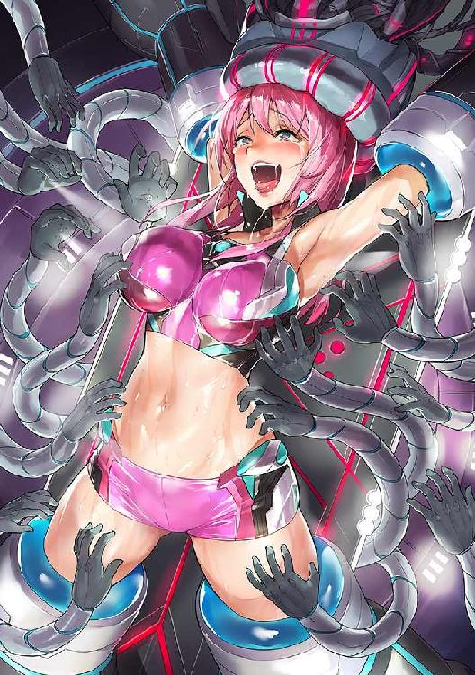
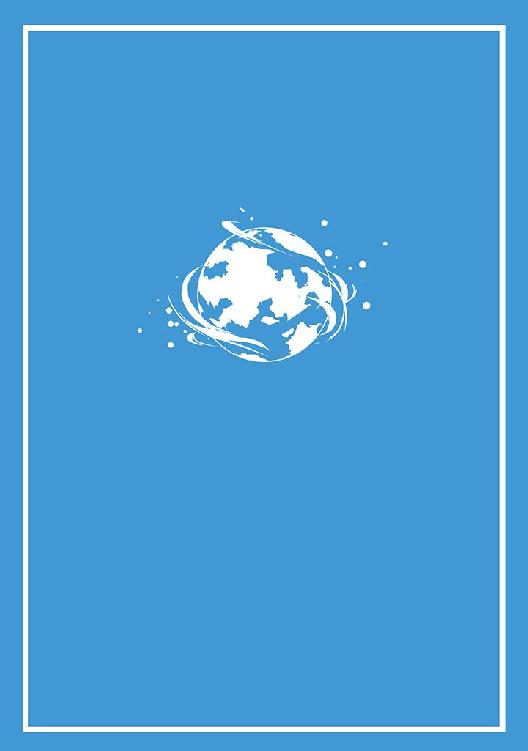

| さながら元素のように僕らは出会った 犬吠埼ナイン構想 (電子書籍普及委員会) | |
| 犬吠埼一介 | |
| (2018) | |
闇夜のなかを、小型の宇宙船が一機、不安定に機体を傾けながら低空飛行していた。
コックピットに、耳障りな警告音が鳴り響いている。不安を呼び起こすような音と、ディスプレイに明滅するいくつもの赤色の警告メッセージの羅列を、詳細に確認するまでもない。船の不調は明らかなのだ。
「ったくもう、うるさいわねー」
ひとりで座席に座った彼女は、いつになく重たくていうことを聞かない操縦桿を、なだめるように手動モードで操作する。レーダー画面を凝視し、都合のいい不時着のための場所をすばやく探していった。
地面を示す座標軸が、ぐんぐんとモニターに拡大されていく。重力に引きずられて傾いた宇宙船の姿勢を立てなおそうと両腕に力を入れ、力任せに操舵するものの、もはや修正は難しいように見えた。
次の瞬間。レーダーの補足音とともに、ディスプレイにはっきりと表示された緑色に瞬くアイコンが目に入ると、彼女の全身に驚きが広がった。
「あ、あぶなっ......」
間違いない。その、特徴的なシルエットは......人間だった。
当番となっている、お決まりの退屈な巡回警備のコース。それでも、何が起こるか分かったものではない物騒な昨今だ。彼は、真剣に道筋をたどっていた。
雲が多く、月も星も出ていない林道を、馬を駆りながら足早に移動していく。集落と郊外の森とを隔てる、外周に位置する部分である。遅い時間にはこうして人の姿こそないものの、十分な程度に整備されており、原野にはない文明の気配があった。
ふと、目の前の地面に、それまでにはなかった自分自身の影が濃くはっきりとゆらめいたのを感じて、彼は馬の手綱に力を込めて歩みを止めた。
「......何だ？」
背後の空の、一点を凝視する。最初はごくわずかの違和感しか感じられなかったが、次第に、音と振動と光がゆらゆらと揺れながら大きくなっていった。
何事だろうか。そう思う間もなく彼は馬を急かすと、怪しげな光が向かっている先へと併走した。
「奴らの船か。これは落ちるぞ」
高度を下げ、背の高い木々の先端を折りながら傾いて飛ぶ対象を、見失わないように追いかける。忌避するようにいななく馬を、手綱を引き締めて踏み止まらせた。
彼の二つの瞳が、無意識のうちに、ぼうっと青白い光を発していた。闇夜に浮かぶその様子は、夜行性の獣を思わせた。
周囲の光景が、急に速度を失い、ゆっくりと進むように見えてくる。警戒心により極度に高められた集中力が、初めて目にする宇宙船の無骨なフォルムを明確に捉えていく。
何事もなしでは、済まないだろうな......。そんな確かな直感が、はっきりと頭をよぎった。変わっていく。何もかも。一瞬、ひどく悪い予感がして、船から目をそらして集落の方向を見る。幸いここからは相当な距離があるため、火の手が上がっても燃え広がることはないだろう。そう、思った矢先だった。
地表に最接近した宇宙船が発する轟音と、光と熱、排気の異様な臭気に恐れおののいた馬が、両前足で空をかき乱しながら、乗っていた彼を弾き飛ばして暴走したのだ。
注意がそれていたため、手綱を手放してしまった。それに気づいた時には、激しい衝撃とともに地面に叩きつけられていた。
「ってて......あの野郎、こんな時に」
うめき声とともに、身を起こそうとする。だが......彼も、この星の特異な血を濃く受け継いだ人間だ。悪い予感は得てして的中するものなのだった。
間近で、耳をつんざく轟音。急制動のための強力な逆噴射の熱風が、青くて短い髪をばさばさとはためかせる。ひどく傾いた機体のバランスを何とか立てなおそうとした宇宙船が、今まさに、頭上めがけて降下してくるのを、彼はなすすべもなく見つめていた。
船の底面が地面と接触する重たい衝撃が、最先端のテクノロジーによってすら軽減しきれずに、コックピットに至るまで駆け抜ける。慣性で地面を滑っていくぐらついた揺れが収まると、やっとのことで停止した。
安全ベルトを弾き飛ばし、操縦席からひらりと身を起こすと、彼女は本来であれば必要なはずの「服装の偽装」もそこそこに、船内の通路をすばやく移動し、ハッチを跳ね開けて船外に飛び出した。
ギャラクシーレギオンの正式なユニフォームのひとつ。最新鋭の高度なテクノロジーによって作り出された、快適かつ身軽に動くことができる精密な仕組みのすべてが、コンパクトに収納されている。やや露出の多い、シンプルかつスポーティーなデザインの服装にしか見えないこともない。もしかしたら、テクノロジーとは無縁の、この惑星アディオスの住人から見ても同様だったかもしれなかった。
「あっちゃー。こりゃまた見事にやっちゃったわね......」
心配していたとおりのことが起こっているのを目視でも確認すると、彼女は困惑のため息を漏らした。
地面をえぐるようにして、宇宙船が滑った軌跡が残っている。衝突地点から、最終的に停止した場所まで引かれているその溝の最初のほうで、ひとりの若い男が、地面にうつ伏せの状態で倒れていたのだ。
少し離れた場所では、逃げようとした姿勢のまま、馬が静かに身体を横たえている。当たりどころが悪かったのか、全身を宇宙船の底部に完全に押しつぶされて絶命していた。
注意を、男のほうへと戻す。その瞬間、ほんの微かなうめき声を上げるのが確かに聞こえた。まだ生きている！ 大急ぎで船内に取って返すと、緊急用の簡素な担架を引っ張り出して、ぐったりとしたままの男の身体をそこに乗せた。
「ぐっ......さすがに重たいわね。いい？ まだ死んじゃ駄目よ」
そう、あえて軽快に呼びかけるものの、男に聞こえた様子はなかった。
船内へとどうにかこうにか担架を運び込んでから、ゆうに三十分ほどが経過していた。
自動制御の医療用ロボットが、レーザーメスで瀕死の男の肉体に大胆に切れ目を入れる。繊細で機敏な複数のアームが、人工知能の明敏な判断に忠実に、損傷した組織や臓器、骨、血液を、人造のものと着々と置き換えていった。
必要な大部分の処置が完了し、傷口にはバイオ修復溶液や組織を再構成するナノマシン各種が適切に塗布されていた。
優秀な機械の医師団の活躍を前に、特に手を出すこともできず目視用のディスプレイパネルを眺めていた彼女は、ふいに、その画面がチラつくのに気づいた。
「いよいよってとこかしら」
室内灯や空調装置など、落とせる部分は落としていたものの。墜落の原因にもなった、船内の動力すべてを司るジェネレーターの故障による電力供給の不調が、限界に達しつつあるのが感じられた。
視認のおぼつかない状態で明滅する生命活動のインジケーターが、動力が途絶えつつあるために弱まっていく。一瞬、躊躇したあと、彼女は、意識を服に集中させると、精神感応による操作で、生体エネルギーのブースターを一気に稼働させた。
彼女の伸びやかな肢体を張りつくように覆った布地から、微かな光が浮かび上がる。屋外活動用の外套部分をワンタッチで切り離すと、アンダーウェアのみの状態で、治療台に横たわる男の上へと、そっと覆い被さるようにして身を横たえた。
「カモン。頼むわよぉ。死なれちゃ、それなりにヤバいんだからね？」
目を閉じたまま眠るように横たわっている男の、引き締まった筋肉の盛り上がりを感じながら、両腕を、両脚を絡ませる。
そのまま、しばらく時間が過ぎた。動力が落ち、緊急用のライトだけが残った船内で、彼女の全身から発する穏やかな光が、男の身体を包み込んでいる。
宇宙船は地面に衝突し、滑って若干傾いたまま停止し、集落から離れたその場での出来事に、まだ誰も気がついていなかった。
目の前に、あっという間に宇宙船の底面が広がる。視界を覆い尽くされる。エンジンの排煙のにおいが鼻につき、強烈な熱気に驚いたところで、激しい衝撃に全身を揺さぶられた。分厚い壁に思いっきり叩きつけられたような痛みを感じたはずだったが......不思議なことに、意識が朦朧として、そこから先の記憶が定かではない。
そんななか、確かに、感じていた。ゆっくりと、一度死んで生き返るかのごとく、深い眠りの底から目覚めつつある意識のなかで......全身に覆い被さり、妖艶に肢体を絡めてくる、温かくて心地のよい存在を。
じんわりと、凍りついて冷え切った身体が、溶かされるように......。
「目が覚めたようね」
ふと気がついたら、そんな声が頭上から聞こえた。身体を起こそうとするものの、鈍い痛みと痺れるような感じがして、思うように動かない。
「君は......いったい......」
目を瞬かせながら、手をついて苦しげに身を起こすと、横たわっていた救護ベッドが自動で角度を変えて、巧みに動きをサポートした。まるで人間のような動きに、彼は驚きを隠せなかった。
「エリィよ。気づいてると思うけど、この星の人間じゃないから」
そう、さらりと核心を漏らしながら、軽快な口調で応えてみせる。
「そりゃまあ......そうなんだろうな。俺はロンド」
二人は、お互いシンプルに自己紹介を済ませると、明るさを取り戻した船内の救護室で向き合った。宇宙船の墜落の原因となった、ジェネレーターの故障は、ロンドが目覚めるまでに、エリィが簡単な応急処置を済ませてある。
「確か......空を飛ぶ船に潰されたはずだったが？」
「それについては、悪かったと思ってるわ！ どうしてもっていうか、船の動力部が不調だったのよね」
言葉とは裏腹に、そう悪びれてもいない彼女を見て小さくため息をつくと、ロンドは両腕を持ち上げたりして、思いのほか怪我の程度が軽いことに気づき、目を細めた。
「何か、したか......？」
「何かって、何かしら？」
「いや別に。どうも軽傷だと思ったんだよ」
鋭く、疑惑の視線を向けてくるのを、軽く微笑んで見返す。
「応急手当くらいは、ね」
「そりゃ、どうも」
確かに、相当な規模の負傷をしたはずなんだが。そんな思いはふと、遮られた。
目の前で、ゆったりと壁に寄りかかり、胸の前で腕を組み、軽く両脚を交差させるようにして立っている彼女の、全身の肢体の艶めかしいラインを際だたせるようにぴったりと覆った服装に、思わず視線を惹き寄せられたのだ。
肩口までのごく短い袖から二の腕が伸び、豊満な両胸の膨らみを包むタンクトップは腹部を露出して途切れ、さらに、丈の短いホットパンツから魅惑的にすらりと伸びたふとももへと続いている。
「今後......定期的な診断が必要になるから」
エリィのつぶやくような声に、ふと現実に意識を戻し視線を上げると、彼女と目が合った。凝視していたのを気づかれたか。ロンドは慌てて視線をそらす。
「いったいどういうことだ」
「内緒よ、いろいろと。答えられないことのほうが多いからあれこれ聞かないでね」
そういいながら、彼女は身体をすばやく滑らせると、未だに辛いのか救護ベッドに腰掛けたままのロンドの隣に身を寄せ、身体をもたせ掛けた。
「何だよ......」
「別に？ 私に対して怯えないのね。この星の住人じゃないみたい」
そんな風に、あけすけに問いかける彼女の訝しげな視線に、この星の人間みたいとは何だ、と憮然とした様子を見せながら。ロンドは、すぐそばにある彼女の肢体の、素肌のきめ細かさまで感じられるほどのみずみずしさに息をのんでいた。
「まあな。事情はこっちにもあるんだよ。俺は、集落の自警組織の代表でもあるし、ギャラクシーレギオンとフロンティアグラッドの対立についても......」
「マジで！ いいわね、それ」
なぜか急に、その言葉に激しく食いついたエリィが、すらりと伸びた美脚をぶつけてくるのに、ロンドは困惑する。そんな彼の胸中など知らぬかのように無視して、エリィは冷酷に宣言するのだった。
「あなたを、このまま野放しにはできなくなったわ。いろんな意味で」
目を細め、口元をにやりとつり上げて、今すぐに鎖でも繋ぎかねない勢いでそんな物騒なことをいう彼女の様子に、ただならぬものを感じながら......ロンドは、思うのだった。我ながら、惑星アディオスの血を濃く受け継いだ人間の悪い予感は当たるものだと。
「勘弁してくれ、っていったって......」
「駄目に決まってるでしょ！ あなたの命だって懸かってるんだから」
そういいながら、エリィは、ロンドの胸のど真ん中をそっと指先で突いてみせた。その婉曲なヒントが通じたのか......ロンドは、先ほどからまるで「鼓動を感じない」心臓の動きを理解すると、観念して、背後に身を投げ出した。
宇宙空間を、滑るように移動する。小型宇宙船を、ギャラクシーレギオンの旗艦とドッキングするための軌道へと徐々に接近させていくお決まりの操作を、エリィは慎重に行った。
あれから念入りにメンテナンスを行い、不時着の原因となったジェネレーターの故障にはおおむね対策を施してある。
だが、ここは宇宙だ。万にひとつの瑕疵が、容赦なく命を奪う。冷酷な、非生命の空間。そこへの恐怖は、長年の飛躍的な技術の進歩によって薄らいではいたが......根底は、変わってなどいないのだから。
イオンジェット推進による加速の振動が、船全体に響いていた。見る間に、進行方向の大きく巨大なオブジェクトが、ディスプレイに拡大されていった。
「ふむ......これまでの状況に大幅な変化はなしということか。ご苦労だったな」
「大変恐縮です」
にっこりと儀礼的な微笑みを浮かべながら、エリィは目の前の男......ギャラクシーレギオンの辺境討伐艦隊における、情報戦部門の上官へ、斥候任務の状況報告をしていた。
いつもと何にも変わらないんだから。そう、心の中で強く念じながら。
「よかろう。フロンティアグラッド諸侯への侵攻は重大なミッションだ。油断なく進めてくれたまえ」
「はい、もちろんですわ」
優雅に一礼し、男の前を辞す。そのまま回れ右。気密ドアが開いて、閉じた。
思わず、ため息が漏れる。報告書類の内容は慎重に確認したはず。今回発生したトラブルが表沙汰になることはまずないだろう。
「まったく世話が焼けるわね......って、私がそもそもの原因だったか......」
ロンドが彼女の述懐に抗議するさまが思い浮かび、慌てて彼女は想像の彼に言い訳をした。
(分かってるわよ、それくらい。重要なミッションなんですからね)
低重力環境の通路を、身軽に飛ぶように移動しながら、顔見知りの人間が通りかかると快活に笑顔で挨拶する。そんな風にして彼女は、ロンドとの一件を煙に巻いた。
ここが宇宙であることを忘れさせてくれるような、優雅な内装のサロンで。飛沫が飛び散らないよう精密な電磁気的細工が施された飲み物のグラスを手に、にこやかに談笑する者たちがいた。
エリィは、彼らの輪に加わったり、それとなく離れたりしながら、終始にこやかに振る舞っていた。
ギャラクシーレギオンの辺境討伐艦隊、旗艦である。そこで、いささか気の早い祝勝会が賑やかに行われているのだった。
（錚々たる顔ぶれだわ......）
内心を悟られないよう注意しつつ、周囲を見回す。いよいよ、彼らが信奉してやまない銀河皇帝ゼノアの威光が、あまねく辺境の果てまで到達するとあって、誰もが華やいだ雰囲気を漂わせていた。
喜びに満ちあふれ、皇帝の権威を微塵も疑わない表情で談笑する高位の人間たちを前にして、エリィは、若干の距離を感じないでもなかった。
まだだ。何も終わっていない。辺境を征服するという一大事業はこれからも続いていく。それを実行するのは、彼女たちのような現場の人間ではないか。
ふと、場がさらに賑わいだ。何事かと視線を上げると......そこに「奴」がいた。
「これはこれは、ベネク様。この度の、辺境討伐の成功をお祝い申し上げます！」
人の輪が開けて、颯爽と歩いてくる彼を包み込むように再び集まる。鷹揚に、彼らの賞賛に応えながら、その男は、覇気のある魅力的な笑顔を振りまいてみせた。
「......有難う。ミッションが滞りなく進んで何よりだよ。いうまでもなく、皇帝陛下の威信と、我々、艦隊の存続が懸かっているからな」
そんな風に、おどけてみせる。周囲からの彼に対する賞賛の視線とは別に、エリィはそこから逃げ出したい気持ちでいっぱいだった。
(ちっ。どうしてわざわざ、このタイミングで帰ってくるのかしらね......)
お互いの家同士が半ば強引に決めた、婚約者であるベネクとの喜ばしくない「再会」である。彼女は気丈にもその場に踏み止まった。
「おお、エリィ。久しぶりじゃないか！」
「お帰りなさいませ。そうでしたかしら？」
人垣のなかに佇む彼女の姿を目ざとく見つけ、うれしそうに近寄ってくるベネクを呪いながら、彼女は「心から再開を喜んでいるというテイの表情で」彼を迎えた。
「お互い、任務のある身だからな。しょうがない。今宵は寛ごうじゃないか」
そういいながら、いかにも婚約者然として身を寄せてくる彼に、自然に寄り添う。
「お帰りになると分かっていればお待ちしましたのに」
「うれしいことをいうじゃないか。いや何、隣の星系で、頭の固い辺境野郎どもに物事を理解させるのも大変でね......」
男性にしては長めの、緩くウェーブの掛かったさらさらの金髪を軽く手で払いながら、ベネクは片目を瞑ってみせる。彼女を自然に誘うと、艦内に造られた豪華なサロンの壁面......目の前の宇宙を一望できる場所に並んで立った。
「何と麗しい！ 魅惑のカップルですわね」
「エリィ様がうらやましいですわ」
「いやまったくだ」
周囲でそれとなく気を遣いながら二人を見守っていた、ベネクの熱狂的な信奉者たちが、口々に窓辺の二人を賞賛する。
それもまた、確かなのだった。ベネクといえば、その辣腕で、辺境......フロンティアグラッド諸侯と呼ばれる頑固な抵抗勢力に対して、日々、ギャラクシーレギオンの軍門に下るよう「講和という名の服従」を承認させている、やり手の士官である。
まだまだ若手の部類に入る彼が、事実上指揮統括するこの少数精鋭の艦隊は、銀河皇帝ゼノアの名において辺境を飛び回る、まさに光り輝く権力の象徴であるといえた。
「惑星アディオスも、すぐに手中に収められるんですわね？」
ベネクの瞳を覗き込みながら、うっとりとした賞賛の笑みで、エリィは訊ねた。
「ああ、もちろんだ。君には苦労を掛けるがよろしく頼むよ」
「あらっ。私などには過ぎたるお言葉ですわ、ベネク」
高揚に頬を染め、彼にゆったりと身体をもたせ掛けながら、エリィはそんな風に返してみせるのだった。
(うざいわね、まったく......)
内心で毒ついていることなど、目の前の男には露ほども知らせずに。窓から臨むのは、次なる標的となった惑星アディオスだ。その地上のどこかに今もいるであろうロンドのことが、ふと脳裏に浮かんだ。
「辺境など蛮族に過ぎない。奴らがいったい何だ？ 講和など生ぬるいわ。いくらでも征服すればいいじゃないか」
「そうだ、そうだ！」
「ゼノア様の威光を！」
「辺境討伐だ！」
意気揚々と宣言するベネクに同調した周囲の軍人たちが、続けざまに声を上げた。
そんなごく当たり前の......彼らの世界では日常といえる光景を見ながら、エリィは密かに、浮かび上がる違和感と戦っていた。
航海日誌 ログナンバー１３６５８９２
銀河帝国歴１４３７年７月２８日
惑星アディオス衛星軌道上にて
いよいよだ。ギャラクシーレギオンの艦隊が辺境に現れた。恐れていたことだったが、ついにこうして現実となるとは......。
ティバルよ。君がこの地を耕した日々のことをよく覚えているよ。私はここで、ずっとその営みを見てきたのだからね。アディオスと名付けたこの惑星をぐるぐると回りながら、ずいぶんと長い時間が経った。
今を遡ること、相当な昔だ。当時はまだ皇帝どもの権勢も、今ほど圧倒的ではなく。高圧的な支配を快く思わない人間たちがこぞって船を駆り、この辺境の星系にフロンティアグラッドという諸侯を築いたのだったな。
だが、その必死の努力は、今まさに、空しく潰えようとしているのだろうか。私の目には、すでに彼らの船が映っている。進行速度と方向から察するに、彼らはじきにここまでやってくるだろう。
地表では子らが、豊饒な大地からの恵みによって充実した日々を送っている。彼らには、この喫緊の事態を退ける手段も、交渉を有利に運ぶための効果的な材料もない。
なぜなら、ティバルよ。君が彼らのために残しておいた備えは、あまりにも長く、手つかずのまま捨て置かれたために、機能不全に陥ってしまったのだ。
まさか、軌道上から彼らをただ見守ることしかできない私だけが、この地で満足に稼働する最後のテクノロジーとなるとは思わなかっただろうな。しかし今となっては......。
こうしている今も、着々と、近づいてくるのだ。彼らの艦隊が。それを防げず、この星に生きる者たちを救えないことを許してくれ、ティバルよ。
だが私は、決して目を背けることはない。この星が創造された当時の理念のすべてが失われる最後の瞬間まで、追い続け、記録し続ける。それが私に残された最後の使命だと思っている。
ログナンバー１３６５８９２収集完了
汎用監視衛星上自動記録装置 クロウェル
生い茂る木立を分けるようにして、せせらぎが流れていた。
流れは、川の狭さに見合って、いくぶん速い。水量が少ないので、無理をすれば人が歩いて渡ることも難しくないだろう。
川岸の、大小の石の転がる悪路を、ロンドはエリィと連れだって歩いていた。
「ほんと、蒸し暑いわねー......」
肌を大胆に露出したインナーの上から、この星の人間の一般的な服を一枚重ね着しただけの薄着をしているのにもかかわらず、エリィはそんな風に恨めしげな愚痴をこぼしてみせた。
「しょうがないだろ？ 我慢しろよ」
集落へと続く細道を迷わずに歩きながら、ロンドもまた言葉少なに応えてみせた。
それもそのはずだ。本来は寒冷だったこの星の気候を、人が住めるように調整しているのが、目の前を流れる水流なのだから。大地を循環する熱源のすぐそばを歩けば当然である。
「いいか。何度もいうが、絶対に不審な行動を......」
「もー、大丈夫だってば！ いっとくけど、こっちだって仕事なんだからね」
「はっ。どうだかな」
ロンドは正直、彼女を集落に連れて行くなど正気の沙汰ではないと思っていた。
だが......行きがかり上、生殺与奪を握られているのだ。その事実に恐怖しつつ、目の前の謎の多い女が必要だと主張するのであれば、無碍には断りづらいものがあった。
「見えたぞ。あそこだ」
曲がりくねった川岸をしばらく歩き続けて。ようやく、生い茂った木々の間に切れ目が見える集落の入り口にたどり着くと、疲れの見えていたエリィの表情が明るくなった。
「思ったより広いのね」
「まあな。この近くでは大きいほうだ」
川岸からほど近い場所に、木々の生い茂る山肌の脇のわずかな平地を開拓して作られた集落があった。
石組みの灌漑用水路が整備され、張り巡らされている。すぐ近くの川を流れているのと同じ熱水が循環しているため、周囲はうっすらと霧掛かっていた。
よく見るとその水路は、木材や藁、煉瓦などを巧みに利用して建てられた、それぞれの民家にも引き込まれていた。集落の中心部分には、ひときわ大きくて深い、石組みの泉があった。
「意外と文明的、ってことね......」
咎められない程度に周囲を移動しながらつぶやく彼女を、ロンドは内心で怯えながら見張っていた。
「団長、お帰りなさい！」
「お疲れさまです。どうかしたんですか、その人は？」
早くも、集落のなかに入った二人、特に、見慣れない、かつ相当な美貌とスタイルを兼ね備えたエリィに気づいて、若い村人が興味深そうに声を掛けてくる。
「ああ、大丈夫だ。何でもないよ。急に済まないね。隣の集落からの研修生だ」
「こんにちはっ！」
すばやく若い村人たちに快活に挨拶すると、エリィはにっこりと微笑みながら、かわいらしげに首を傾げてみせた。
「あ......どうも。我らの集落へ、ようこそいらっしゃいました！」
彼らは早くも、にやにやと照れて、顔を赤らめている。エリィの美貌や、漂わせているみずみずしい雰囲気に取り込まれたようだ。
「集会室にいる。お茶をお出しして」
「はい、団長！」
それ以上、余計な詮索をされないうちにと、ロンドは指示を出して彼らを追い払った。
集落の中心部分。周囲よりも比較的大きな石組みの建物の中に入ると、穏やかに採光された通路を進み、奥にある部屋のドアをノックした。
「よう、ロンド。戻ったか」
中にいたのは、１０人ほどのメンバーである。集落の統治に携わっている年かさの人間たちが半数。集落の安全を管理する自警団の人間がもう半数。こちらは若者ばかりだ。
ロンドは、慎重にそつなくエリィの紹介を済ませると、空いている椅子を指した。
「君はそこに座っていてくれ」
言外に、それ以外には何もするな、という意味であることは、幸い周囲には悟られていないようである。
「連中に、何か動きはあったか？」
「今のところは何も」
昨夜の警備の状況を、何事も起きなかったというテイで簡潔に報告する。彼もまた、昨晩のエリィとの微妙な一件については黙殺するのだった。
「ところがだ。こんな話もある」
「と、いいますと？」
部屋に入った時に声を掛けてきた、統治グループのメンバーのひとりに、ロンドは続きを促した。
「星間通信によると、フロンティアグラッドのいくつもの惑星が、すでにレギオンの軍門に下ってしまったというのだよ」
「困ったことになりましたね」
「ああ。このままでは、諸侯の防衛が雪崩をうって崩れる恐れもある」
その話を聞いて、統治グループと自警団のそれぞれのメンバーが、お互いに深刻そうに顔を見合わせながら言葉を交わした。
「我々も安穏としてはいられないぞ！」
「当たり前だ。だからこうして対策を......」
「対策、対策といってもだな、いったい何をどうすればいいというのだ！」
集会所がにわかに騒然とする。ロンドが手を上げて興奮する彼らを静止した。
「もちろん、対策はしなくてはならない。だが、そう無闇に騒いでもな」
彼の冷静な意見を聞いて、誰もが顔を落とし言葉を失った。
もちろん、集落の統治と自警を司る、この場にいるメンバーであるからには、老いも若きも、何が問題の根底にあるかは理解しているのだった。
ギャラクシーレギオンの圧倒的な軍事力に対抗できる力など、フロンティアグラッドの側にあるわけがない。だが、彼らとしても、むざむざとこの星の主権を明け渡すわけにはいかないのだ。
「こんな時こそ、ティバル様が我らをお守りくださるとよいのだがなぁ......」
「気枯れの問題も、未だに解決されていないからな」
「これ......畏れ多いぞ」
彼らにとって、軽々に語ることの許されないほどの問題であるだけに、年かさの人間が諫める。その問題は、レギオンの件とは別に、彼らの日々の生活を脅かすもうひとつの難題だった。
「大地の気は枯れつつあり。空からはレギオンの船か」
「そうだ。それが我々の現実だ。だが、どうにかしなくてはならん」
すぐに明確な答えが出るわけでもない。動揺を隠せるわけでもない。それでも、彼らは知恵を寄せ合いながら具体的な解決策を模索するのだった。
「奴らと正面切ってぶつかるだけがすべてではないと、俺は思っている。銀河を渡るレギオンの技術力は確かに目を見張るものがある。こちらにとって有利に利用できれば、気枯れの問題も......」
「また、その話か。だがな、そううまくいくとは限らんぞ？ 蹂躙されるだけかもしれん」
ロンドが再度、これまでにもくり返し主張してきた「レギオン勢力との融和」を切り出したものの、統治グループのメンバーには相変わらず評判が悪かった。
今度は、反対向きに川べりを歩く。行きと帰りで雰囲気が違っていたので心配したのか、ロンドが声を掛けてきた。
「どうした？ 緊張でもしたか」
「別に......」
エリィは、言葉少なに、彼のほうを見るでもなく応える。脳裏には、今しがたの、惑星アディオスの代表的な集落で行われていた活発な集会の光景があった。
（奴らがいったい何だ。単なる蛮族じゃないか。討伐して何が悪い）
高慢な表情で自信たっぷりにそういい切るベネクの声もまた、同時に思い出されてきた。
実際に、彼らの生きて動く姿を間近で見ることができた斥候役の彼女だからこそ、直面した困惑だったかもしれない。
「それにしても、本当に必要なのかよ？ その、メンテナンスとやらは。毎回通うのも大変だぜ......」
「死にたければ適当にすれば？」
ロンドが愚痴をこぼすのを、エリィはからかうような口調でたしなめた。
「本来なら助からないほどの怪我や病気でも、身体を機械に置き換えて生きながらえているのよ。いくらテクノロジーが進歩しても限界はあるんだから」
「ったく。誰のせいでそうなったんだよ」
ぶつぶつとつぶやくロンドを、目を細めて見ながら、エリィは胸中で疑念が膨らむのを抑えきれなかった。
ほとんど、変わらないのではないか。彼らも、自分たちも。だとしたら......。
ギャラクシーレギオン、辺境討伐艦隊の旗艦、執務室で。ベネクは、矢継ぎ早に送られてくる、辺境討伐ミッションの成果報告を確認していた。激務の最中にありながら、その充実した内容は、彼を高揚させるに十分なものだった。
「いよいよ、惑星アディオスだな......」
すでにいくつもの星を手中に収めてきた。少数精鋭の艦隊しか率いていないにしては、画期的な成果だといえるだろう。
フロンティアグラッド諸侯を制圧し、皇帝ゼノアの威光をこの地にまで轟かせること。そのミッションは、彼の卓越した指揮能力と、少ない兵力を効果的に見せつけるやり方によって、日々達成されつつあった。
中央で意味もなくふんぞり返っている連中も、彼に対する見識を改めることになるだろう。投資に十分以上に見合う成果に、ベネクの心は自然と躍らざるを得なかった。
（お帰りになると分かっていればお待ちしましたのに）
昨夜、久しぶりに再会できた、許嫁のエリィの台詞を思い浮かべる。
彼は、エリィの美貌や、豊満でみずみずしい肢体を見せつける優雅な身のこなしだけではなく。何より、男をいい気分にさせてくれる気遣いのできる、しとやかな性格を大いに気に入っていた。
ふと......目の前のコンソールを操作した。艦隊を指揮する彼の執務室からなら、どこであれ、ある程度、見ようと思えば見られるように各所の装置が設定されている。その事実は、機密上、多くの人間に知らされているわけではなかったが。
盗み見、というわけではない。彼はそう自分にいい聞かせた。許嫁であり、部下でもあるエリィの様子を、艦隊の指揮官である彼が、少しばかり、様子見のために確認しようというのである。
だが。次の瞬間、彼は驚きに目を見開いた。思わず、目を疑う。そんなバカな？
エリィが使う小型宇宙船の内部をモニターしているカメラが、リアルタイムで送信してくる映像。その様子が、目の前のディスプレイに表示されていた。
「ほらぁ、早く脱いで、横になりなさいよね」
「分かってるよ。ちょっと待てって」
見たこともない、青い髪の若い男が、フロンティアグラッド特有の衣装を脱ぎ、アンダーウェアのみの姿になって、船内のベッドに身を横たえているではないか。いったい何が！
「中を調べるから、じっとしてるのよ」
許嫁であるはずのエリィが、有り得ないほど親密な声色で、見も知らぬ若い男に向けて話し掛けているのを、ただ、なすすべもなく見守るしかなかった。
角度にそれほど自由のない、マイクロカメラの映像だ。だが、稼働しているのは、どうやら医療用の機器であるのは見て取れた。
船内に組み込まれたそれが稼働し、ディスプレイに複雑なパラメータが表示されるのを、エリィがじっくりと観察していく。
その内容を画面越しにかいま見て、ベネクは愕然とした。見てしまったのだ！
何の理由かは知らないが、惑星アディオスの住人であるこの謎の男の身体に施された、医療手術の痕跡を、はっきりと。その疑いようのない事実に、ベネクは困惑するしかなかった。
「エリィ、君はいったい何を......」
もちろん、敵地に単身で斥候に向かっているのだから、その過程で、現地の人間と親密に振る舞うように見せかけることがまったくないとは思わなかった。
だが、さすがに、これはない。ギャラクシーレギオンの超先端テクノロジーを、こともあろう、フロンティアグラッドの人間に不正に施すとは。有り得ない。考えられないほどの裏切りではないのか？
ベネクは、それまでせっかく堪能していた、任務が順調に進んでいることからくる高揚感が、急速に揺らぎ、不安と憤りに取って代わるのを感じていた。
このままでは済まない。艦隊を指揮する人間としても。そして......彼女の許嫁である、ひとりの男としてもだ。ベネクは、確固たる決意を胸に、目の前のディスプレイで繰り広げられる、二人のいかにも親密そうなやり取りを見ていた。いいだろう。思い知らせてやるぞ。誰だか知らないが、この野蛮人め。
普段から常に冷静沈着に振る舞い、周囲に余裕を見せつけているベネクの、滅多に見せることのない心の底からの怒りの表情を見ている者は誰もいなかった。
宇宙船の医療用ベッドに寝かされての、エリィによる「定期的なメンテナンス」から、やっとのことで解放されると。ロンドは、日課であり、彼自身の職務でもある集落郊外の見回りに赴いていた。
重要な報告書を書くのだといって、調子よく彼を追い払うように手を振っていたエリィのことが、どうしても気になる。
「はぁ......これからどうなることやら」
ほんの少し前。今と同じ見回りの最中に、突然上空に現れた宇宙船に轢き潰されたかと思えば。
気がついてみたら今度は、桃色の髪の美女に日ごと身体をいじくられる身の上である。なるほど、深いため息も出ようというものだった。
それでも、落ち込んでなどいられるはずがない。フロンティアグラッド諸侯のひとつであり、そして最大規模の星でもある惑星アディオスの置かれている困難な現状を思えばである。
そもそも、エリィの船が、不時着という極めてイレギュラーなケースとはいえ、ロンドと物理的に接触していること自体が。まさに現在進行形で起こりつつある波乱を強く感じさせる出来事であるといえた。
高度な文明を自在に使いこなすレギオンの連中とは違い、こちら側では、惑星同士の物理的な交流も絶たれて久しいのだ。
惑星間を行き来するための高度な技術は、かつて存在してはいたものの。長い年月が過ぎるとともに、次第に老朽化し、失われていった。
それだけに、ロンドは、にわかには信じ難い思いでいた。そっと、胸に手を添えてみる。本来はそこにあった臓器が、すでに失われ、どんな仕組みなのか知らないが、人造の機械に置き換わっているというのだ。
「あんまり、ぞっとしないねぇ......」
体感ではごくわずかの差ではあるものの、確かに、押し当てた手のひらに鼓動は伝わってこなかった。
そんな風に、急速に失われていく日常が、彼の訓練された警戒心を歪め、麻痺させていたからだろうか。
「がっ......？」
突然。脇を通り過ぎようとしていた茂みの中から、強い光が瞬いたのが見えた瞬間、ロンドは全身に鋭い衝撃と痺れが走るのを感じた。
（ちっ、今度は何だ......）
そう思う間もなく、力の入らなくなった身体がぐらりと傾いていく。地面にぶつかる痛みとともに気を失った。
それを見定めたタイミングで、茂みが大きく揺れ動くと、枝葉をかき分けるようにして数人の人影が勢いよく飛び出してきた。
「捕らえました」
「よし。すぐ運べ」
すばやくて無駄の一切ない、熟練の兵士の動きであると、ロンドが見ればすぐに分かっただろう。
彼らはロンドの手足を握って持ち上げると、地面から少し浮かせるようにして手際よく運んでいった。
雑木林の奥に隠してあった、木々を折り倒すようにして強引かつ密かに着陸した小型の高速宇宙船。その内部へと彼らが収容されると、すぐに、エンジンが青白い炎を吹き、機体が静かに上昇していった。
どれくらいの時間が経ったのか。再び目を覚ますと、ロンドは、両腕を背後できつく縛られたまま椅子に座っているのに気づいた。
「ふん......お目覚めのようだな」
痛む頭に顔をしかめつつ、ぼやけた視界がはっきりしてくるのを確認する。
そこには、男性にしては長めの、ウェーブの掛かった金髪が目立つ美麗な男が、数人の従者たちとともに立っていた。
「そりゃあな。今度はいったい何だ？ いったいどちら様かな」
臆することなく、挑発する。ロンドは、不自由な体勢ながらも、全身が浮き上がるような微かな違和感を感じていた。どうやら、宇宙にいるらしい。
「いうじゃないか、蛮族が。お前たちのような連中に、ギャラクシーレギオン艦隊旗艦の床を汚されるだけでも腹立たしいわ！」
「おいおい。いきなり人をさらっておいて、いったい何を怒ってるんだ？」
目の前の金髪男の態度がまったく解せないとばかりの、ロンドの反応。だがそれが、ベネクの苛立ちを加速させる。
「そうやってしらばっくれるつもりなのか。いいだろう。おい、あれを持ってこい」
ベネクが顎で指示を出すと、控えていた従者が、背後にあった一枚の大きな写真のようなものを恭しく手渡す。そこにはっきりと浮かび上がったシルエットが、すぐにロンドの視界にも入った。
「何なんだ、これは！」
わなわなと手を震わせ、写真をロンドの眼前に差し向けながら、ベネクは怒りのこもった視線を向けた。
「......俺の、身体だよな。それで？」
「それでも、何も、あるか馬鹿者！」
ベネクは強硬にそういいながら、写真を裏側から指先で弾いてみせた。乾いた音が狭い室内に響く。その箇所、だけではない。写っている画像のそこかしこに......人間の臓器では有り得ない、機械化された形跡のある影が映り込んでいる。ロンドは、その現実をしっかりと見据えながら応えた。
「俺の知ったことかよ。そっち側の都合で、仕方なくそうなったことだろ。今さら元に戻せとはいわんがな」
「我々の都合？ はっ、ぬけぬけとよくいうではないか。お前なんぞには分からんだろうがな、その技術は、そんじょそこらの蛮族どもに、さあどうぞとくれてやるわけにはいかん代物なのだよ！」
そう、吐き捨てるように宣言するベネクを、ロンドは冷ややかに見返してみせた。
「だからな、俺はただ、いつもどおりに集落の見回りをしていただけなんだよ。気がついたらお前らの船に轢かれて、治療を......」
「治療、だと？ ふん、お前のような蛮族など、いくらでも轢き潰せばよかったのよ。そのほうが数が減って都合がいいわ！」
ベネクは怒りを込めて、持っていた写真を背後の机に叩きつけた。目の前の、ロンドという男が、彼の強い権威を微塵も恐れていない様子なのが気に食わない。
「蛮族、蛮族というがな、我々はフロンティアグラッド諸侯の名誉ある一員だ。何の権限があってその領土を侵害する？」
ロンドが、彼らの側からの主張を述べたのに対して、ベネクとその従者たちは顔を見合わせると、さも下らないとばかりに嘲笑した。
「私も、この艦隊の指揮を執らせてもらってるんでね。お前たちがいつまでも強情を張り、レギオンの配下に収まらないことを喜ばしいと思うものかよ」
ベネクは、至極当然といわんばかりに、椅子に座ったまま縛られた彼を見下ろしてみせた。
「ああ、そりゃそうだろうな」
「何だと？」
「俺も、集落の自警団のリーダーをやらせてもらってる。お前たちレギオンの連中が、他の星系で何をしてきたかだって知ってるさ」
ベネクは、目の前の男が、蛮族の低劣さに見合わない強靱な精神力を持っている理由をすぐに理解した。
「星ひとつの、あるいは銀河全体の覇権が懸かった話だからなあ。そうやって憤るのも理解できる。だが、艦隊の指揮官様なら、もう少し冷静になるべきだな」
「冷静にだと？ ああそうとも、俺は冷静に、これまでにもお前ら反レギオンの連中を支配下に置いてきた。ここでもまた、同じことをするだけだ」
やれやれ、とばかりに、ロンドは、ベネクの目の前にいるにも関わらず余裕そうな笑みを浮かべた。
「さすがは頭の固いレギオンの軍人だな。俺たちだって、お前たちを憎み、反発する者たちばかりじゃないといっているんだが？」
「そんな奴らがどこにいるってんだよ」
腕を両腰に当て、権威者然として見下ろすベネクを、逆側からロンドが見返す。その鋭い視線の応酬に、周囲の従者たちは困惑して、ただ状況を見守るばかりだった。
「惑星アディオスは現在、いろいろな問題を抱えている。解決が模索できるなら、ギャラクシーレギオンとの平和的な交渉だって十分視野に入る」
「そんなご大層なことを、お前ごときがひとりで決められるのかよ？」
「まぁな」
「ええい、ふざけるなぁっ！」
ついに業を煮やしたのか、ベネクは、目の前のロンドの顔面を力いっぱいに殴り飛ばした。両腕を縛られて抵抗できるわけもなく、ロンドは椅子ごと背後の床に倒れ込んだ。
「こいつを跡形もなく解体して処理しろ。俺は忙しいんだよ」
尋問は終わりだとばかりに、ベネクはもはや背後の彼らには目もくれず、猛然と部屋から出ていった。
集落から離れた場所に隠して停船してある、小型宇宙船の狭い一室で、エリィは、長いこと机と向き合っていた。
「こんなところかしらね......」
ようやくとばかりに身体を起こすと、背伸びをして深く息を吐き出す。それから彼女は端末に表示された文面をざっと最終確認すると、苦労して書き上げた長文の報告書を、本船の直属の上官に向けて、送信した。
これがいったいどのような結果を引き起こすかは、まだ分からない。だが、ずっと思い悩んできたことを、今に至っても何もせず、そのままにはできないほど、彼女はストレートで大胆な性格をしていたのである。
ふと......何か軽食でも取ろうと立ち上がりかけて、エリィは、船の操縦に関する事項が表示されるディスプレイに注意を引かれた。
「......？ まさか」
あるはずのない、航跡。何しろ、彼女自身の船は、停船したまま一晩中ここにあったのだから。
その意味をしばし考え、はっと気がつくと、彼女は通路をすばやく駆け抜けてコックピットへと戻った。
より詳細な画面が、深夜にすぐ近くをレギオンの小型宇宙船が通過したことを示していた。そしてあろうことか、彼女があらかじめインプットしてあったはずの、ロンドの居場所を示すマーカーが、付近から消えているではないか。
「やりやがったな......」
忌々しそうに顔をしかめ、歯ぎしりをして悔しがる。だが、時すでに遅しだった。
いつもくり返していることながら、緩慢で時間の掛かる旗艦へのドッキング作業を、エリィは辛抱強く見つめていた。
ロンドとの問題については彼女自身の油断と失敗が招いたこととはいえ。それまで単身での斥候任務を任されていた以上、急にそれを破ってまで、強引にロンドを本船に連れ去った理由が気になる。
ロンドを轢き潰した件をもみ消した報告書に不備があったのか？ それとも......ベネクはいったいどこまで知っているのか。
ようやくにして、大小二つの船の空間を隔てていた隔壁が開くと、エリィは、足早に本船の側へと身を踊らせた。低い重力に保たれた船内を移動するための専用廊下をすばやく通り過ぎる。
周囲を、何人かの軍人や船員がすれ違い、彼女のいつもと違う様子に少しばかり目を見開いてみせたものの、それ以上、気に留めたりすることはなかった。
ギャラクシーレギオンの辺境討伐艦隊旗艦とはいえ、あくまでも宇宙船というだけあって、人間が生活するスペースはそれほど広いわけではない。いくつかの通路を曲がりながら、やがてエリィは、船内でも重要な立場の人員が使用する区画にたどり着いた。
船の心臓部である。当然、この場所を特に「警備」する必要はなく、誰も歩哨に立っていない。他の場所とそれほど違いがあるわけではないが、そのいくつかの居室が、艦隊を指揮するベネクのものであることを知らない者はいなかった。
「お忙しいところ失礼します、エリィです」
「おう、来たか。入りたまえ」
入り口のモニターで、簡単なやり取りをする。まるで彼女が来ることを予測していたかのような印象で、ベネクがすぐに応じた。
執務室は、艦隊の指揮官の部屋に相応しく、宇宙でありながら手狭さを感じさせない程度のスペースがあり、必要十分といった機能が整えられていた。初めて目にするわけではないものの、その理知的な印象に、エリィは、若干の怖気を感じざるを得ない。彼女自身の船の、ある程度雑然とした空間を思えば。
「どうした。こっちにこいよ」
テーブルの上に並べたさまざまなタスクを交互に見やりながら、ベネクは、入り口近くで立ち止まっていたエリィに声を掛けた。
「それとも、そんな風に俺に対して気まずそうにする理由があるのか？」
お互いの間で、相手の手の内を探り合うような雰囲気のなか、作業の手を止めてエリィを見やる。その表情を見て、エリィはすでに、彼がおおよそすべての事情を察しているであろうことを理解した。
「お叱りは覚悟しておりますわ」
あえて、そんな風に悪びれずに告げると、にっこりと微笑んでみせる。艦隊指揮官を前にしての、彼女の大胆な態度に対して、ベネクはため息をついた。
「まったく、どいつもこいつも。俺の大事なミッションを頓挫させたくてたまらないようだな」
「そんなことは......」
「あるんだろ？ 君は、あのアディオスの男とどんな関係なんだ」
あえて、この場で彼にとって最も重大な件から切り出す。他のことなど、どうでもいいといわんばかりに。
「彼は......当初は、小型船の不時着の際に意図せず負傷させてしまったので、必要な治療を行ったんです」
「それで？」
「覚醒後に話してみると、惑星アディオスの統治機構で立場のある人間と分かったので、浸透工作を行い、彼らの集落や、政治の場を見ることもできましたわ」
彼女がそう、自らのいい分を述べるのを、ベネクは冷ややかに見やった。
「だが、そんなことは君の任務ではない」
「あら、そうでしたかしら？」
首を傾げて、さも不思議そうに、エリィは応えてみせた。
「まだ分からないようだな。いかに侵攻し、従え、支配するかなんだよ。求められているのはそのためのノウハウに過ぎない。彼らがいったい何であるかとか、どれだけ「マシ」な存在であるかなんてことを、今さら君に講釈して欲しいとは思っていない」
そう一気に述べると、ベネクは、目の前に立っているエリィに向き合うかたちで身体を動かした。
長身で、細身で、豊かなウェーブの金髪をたたえた彼の容姿は、遠目には優男と勘違いさせるほどだが。その実、見る者を威圧するような強い意志をみなぎらせた鋭い表情こそ、彼の人となりを最も表しているといえるだろう。
「彼は今、どこにいるんですの？」
しかし、エリィもまた、彼女にとってこの場で最も重要な事柄を譲らないのだった。硬質な響きの声色が、向き合ったままの二人の間でしばしわだかまった。
「それを知ってどうする。ん？ かしこくもギャラクシーレギオンの上級軍人であり、将来を期待され......」
あえてそこで、しばしの間を持たせる。
「この俺の婚約者でもある君が？」
彼の鋭い眼光が、沈黙したままのエリィを射抜くかに見えた。
「......るさいわね......」
「何だと？」
「うるさいわね、っていったのよ！」
それまでは殊勝にしていたように見えたエリィが、両手をわなわなと震わせながら彼を睨み返している。ベネクは内心で、恐れていたことがいよいよ現実になりつつあるのを感じた。
「許嫁っていったって、そんなの、家同士が強引に決めたことなんですからね。もったいぶってまでいわれたくないわよっ」
ベネクは、目を細めて、憤る彼女の様子を心外そうに見やることしかできないでいた。
「ロンドのことだって。想定外の事故でそうなったんだし、他に選択肢なんてなかった」
「それは違う。蛮族どもの命なんて、いくらでも捨て置けばよかったんだよ」
「だから！ あなたのそういう非情なところがいけ好かないっていうのよ。彼を使わなければ、フロンティアグラッドの中枢にだって入れなかったし......」
「最初に捨て置いていれば。敵性の集団である奴らを侵攻するという大目的を忘れ、その余計な「情」とやらにほだされ、皇帝ゼノアの威信を賭けたミッションを失敗の憂き目に晒すこともなかっただろうにな」
目の前の男との、これ以上の論争に進展が見えないのを改めて確認すると、エリィは重ねて質問した。
「ロンドはどこなの？ 彼はあなたが考えている以上に重要人物だし、失えば、それこそミッションに支障が出ることになるわ」
「ほぅ。艦隊指揮官の俺に指図するつもりなのかよ」
「いいえ。斥候役として現地で得た情報からそう進言しているだけ」
さも下らん、とばかりに、ベネクは顔をしかめた。
「あんな奴！ 今ごろ解体されて死んでるだろ。何しろこの俺がそう命じたからだ。皇帝ゼノアの威信を背負った、艦隊指揮官である俺がな！」
ベネクがさっと手を振ると、それまでまったく気配すら感じさせずに潜んでいた、小さな二つの人影が、エリィの背後の物陰から飛び出してきた。
「きゃっ......ちょっとぉ、何するのよっ！」
驚いて正体を確認しようとするよりも早く、両手両足に細い管のようなものが巻きつき身動きを封じられたのが分かると、エリィはそのおぞましさに思わず悲鳴を上げていた。
改めて見れば、宇宙船の維持管理に必要な労働に使役されているタイプの、遠い星系から連れてこられた異星人だ。
「何というほどではないが......聞き分けのない婚約者には、お仕置きが必要だからな」
捕らえられたエリィを見ながら、ベネクは、支配者然とした冷酷な笑みを浮かべてみせた。
船内にいくつもあるベネク専用のスペースの一室。彼以外のほとんどの人間はその存在や目的すら知らず、立ち入ったこともないような場所に、エリィは連れてこられていた。
「ふざけないで。こんなことして、ただじゃ済まさないんだから」
気丈な台詞をぶつけてくるエリィの姿を、ベネクは、彼女の正面に設置してあるソファにゆったりと座りながら眺めていた。
エリィはといえば、両手両足を大きな機械の台座に固定されて、身動きの取れない状態で拘束されているのである。
小さい外見にそぐわない、異様に力の強い異星人が二人掛かりで、彼女の身動きを封じたまま大きな拘束台に磔にすると、台座のそれぞれ......両手両足に相当する部分が液状に変化し、彼女の四肢を飲み込んだ途端、ぴっちりと隙間なく硬質化していった。
「どんだけ悪趣味な男なのかしら？」
目の前の金髪男が自分に何をしようとしているのか分からないエリィではなかったが、気丈に憎まれ口を叩いてみせる。まったく、ただでさえ少ない船のリソースをこんなことに使っているなんて。
「いつまでそんな態度でいられるかな？」
意地の悪い口調で、ベネクは彼女をいたぶるように嘲笑してみせた。彼の言葉に応じるようにして、台座の各所からロボットアームが出現し、エリィを取り囲むように配置される。人間の手を象った先端をしたそれらが、一斉に、わきわきと器用な動きを誇示してみせた。
「ちょっと......まさか......」
思わずぞっとする。反射的に身をよじってみるものの、両手両足はすでに硬質化した拘束台によって完全に封じられているため、ごくわずかしか回避することができなかった。
始めはゆっくりと......まるで生き物のように滑らかに動く、無数のロボットアームが、エリィの魅惑的な肢体を堪能するかのように忍び寄り、滑らかな素肌を翻弄していく。四肢を封じられ、身動きもできないまま、エリィはその辱めに耐えるしかなかった。
「うっ、くっくく......こ、んな、ことでっ......」
無防備にさらけ出された全身の弱点という弱点を、機械の手によってくすぐられては、いかに気丈な彼女といえども、思わず悩ましげな声を漏らさずにはいられなかった。
そして、にやにやと笑みを浮かべながら、身動きの取れない彼女の目の前で、ベネクがその様子をつぶさに眺めているのである。
「あとで絶対殴ってやる！ ああっ！ ちょっとぉ、どこ触ってんのよぉーっ！」
両わきの下や脇腹、足の付け根やふとももといった部分だけでなく、首筋や背中など、全身をまさぐられていく。そして、否応なく気づくのは、拘束された四肢の敏感な先端、両手のひらや足の裏までもが、見えない場所で機械の刺激によって蹂躙されていた。
「もったい、つけ、といてっ、こっ、この程度かしらっ」
今までに一度も味わったことのない、淫靡な刺激に全身を晒し、無慈悲な機械に陵辱されるという緊張も加わり。言葉とは裏腹に、エリィは息を乱し、全身にうっすらと汗を浮かべていた。
「無論、こんなのは序の口さ」
「な、何で......すっ、てえ？」
非情にも、ベネクが、さらなる責めを予感させる。その意味を解釈しようとした瞬間、エリィは視界の外から、巨大な別のアームが近づき、頭部をすっぽりと覆ったのを感じて戦慄した。がっしりと掴まれているため、もはやくすぐったさから逃れようとして頭を動かすことすらできない。
ひとつに束ねられていた、長く伸びた彼女の美しい桃色の髪が、衝撃で外れ、乱れて、淫靡に散らばる。頭部を覆ったクッションのような質感の部分が、妖しげな光と振動を発した。
「あぁーっはっはっは！ い、いやぁっはっはっはぁーっ！」
自分の身体に何が起こったのか理解できないまま、エリィはひたすら、全身を激しく襲うくすぐったさに翻弄されていた。腹の底から、意に反して、笑い声が飛び出してきて抑えることができない。
その、彼女自身すらそれまで聴いたこともなかったような淫らな声を、目の前の男に楽しまれていることを呪いながら。エリィは、「責めに抵抗する意志そのもの」を、彼女の頭部を拘束し、支配している機械によって......いうなれば、目の前の男によって物理的に封じられているのを感じて、その嗜虐的な趣向をすぐさま理解した。
「ちょぉっとぉーっ！ きゃははは！ こ、こらぁっ、やめなさいってばーっ！ だーっはっはっはぁ！」
両目に浮かんだ涙によって視界はぼやけ、さらには脳髄すら犯されているため視点も定まらない。全身を駆けめぐる、無数のアームによって強制的に送り込まれてくる快楽にも似たくすぐったさの刺激によって悶えさせられてしまい、彼女は、目の前の男に抗議することすらままならないのだった。
彼女を取り囲むアームがさらに何本か増え、今度はその先端から、霧状のオイルが噴射されていった。
ベネクの目の前で磔にされた彼女の、身体中すべてに......髪や顔、両腕からわきの下、両胸や脇腹、足の付け根からふとももへと至る、魅惑的な肢体のライン全体にまんべんなくオイルがまぶされ、大胆に露出した滑らかな素肌を濡らしていく。
拘束台の周囲、複数方向から発せられている強いライトの光を、彼女の伸びやかな肢体がきらきらと反射し、照り輝いていた。
露骨に「鑑賞」を目的とした趣向を感じて、エリィは、今さらながらに頬を紅潮させた。恥ずかしさに、頭に血が上る。オイルによってより一層滑りやすく、敏感になった全身を、機械のアームたちが思いのままに蹂躙していき、彼女はただただ、身動きも、抵抗する意志すら封じられたまま、狂ったように淫らな笑い声を上げさせられ続けるしかなかった。
「おっと、こんなことしてる場合じゃなかった。何しろ、俺は忙しいからな、くっくっく......」
ベネクは、彼が密かに設置していた特別製の趣向の出来に満足しながら、やおら立ち上がると、目の前のエリィの前に立ち、彼女の細い顎に手を添えて、うつむき加減だった顔を正面に向けさせると、涙で濡れたその目を覗き込むようにして、宣言した。
「たっぷり一晩、そうやって反省するんだな。そうすれば、いつものしとやかな君に戻っているだろう」
すでに茫然自失といった状態であったものの、目の前の婚約者が、言葉の意味をしっかりと理解したのを認識すると、ベネクは興味すら失ったかのような冷淡さで彼女に背を向け、その部屋を立ち去るのだった。

「いやぁーっはっはぁ！ も、もうやめてぇ！ お願い、助けてぇ、あーっはっはっはぁーっ！」
エリィの、懇願とも、笑い声ともつかない悲鳴は、防音性の高い機密ドアによって無慈悲に遮られた。
船内の別の区画では、ロンドの放った、勢いをつけた大振りの蹴りが、見張りの兵士の鳩尾に激しく食い込んでいた。不意を突かれて反応できず、体勢を崩しながら背後から倒れて気を失ったのを確認すると、潜めていた呼吸を元に戻す。
ベネクと話していた部屋から、見張り二名によって移送され、倉庫とも作業室ともつかない部屋に入れられるまでの間に、ロンドは見つからないよう慎重に、両手を縛っていた縄を緩めていたのである。
自警団での日々の戦闘訓練によって、こうしたさまざまなケースへの対応を習得していたとはいえ。不意打ちで捕らえられた時のような見たこともない最新の武器で武装している兵士二人を、周囲に気づかれないタイミングで倒せたのは幸運といえた。
幸運......いったいどこまでが、単なる運であるといえただろうか。
宇宙船の内部を均一に照らす、機械的な間接照明のなかでは、それほど目立たないものの。彼がレギオンの人間ではないことを特徴づけるように、両目がまるで獣のように青く光っていた。
惑星アディオスで独自に進化した血を色濃く継承したロンドの、天性の感覚が、彼自身が意図しても、しなくても、危機に陥った際の助けとなるのである。
それはさながら、彼らの星の守り神である始祖神ティバルの恩恵であるといえた。
「こうしちゃいられない......」
そうつぶやきながら、倒れ伏した兵士の懐や腰回りを探る。高度なテクノロジーを利用した使用不能な装備ばかりが目につくなか、ようやく、一本のシンプルで細身のナイフを見つけて奪い取った。
入り口の気密ドアは閉じられていたものの、取っ手付近を操作しつつ試行錯誤するうちにどうにか開く。幸い、施錠はされていなかったようだ。しかも、船内でも特殊な区画だったようで、彼ら以外、誰も通路を往来していなかった。
格闘戦を考慮して逆手にナイフを構え、慎重に、曲がり角ごとに気配を確認しながら進んでいく。時に足を止め、遠く聞こえる話し声や人影を何度かやり過ごした。
（おおよそ、この辺りのはずなんだが）
アディオスの血に宿る本能......「プレコグ」という、極めて特殊な能力によって、確かに現実になりつつあるすぐ近くの不確定な未来を「予知」しながら、未知のはずの事象すら的確に探索していたのである。
連れ去られた彼に、エリィはすぐさま気がついただろう。先ほど金髪の男が見せつけてきた写真。医療用手術の痕跡。その事実が敵の手に落ちている以上、彼女の身にも危機が迫っているはずだ。
明確に認識できるわけではないものの、漠然とした気配のようなものに導かれながら、ロンドは、エリィの居場所を探して船内を隠密裏に移動していった。
「......そなた、いったい何者か？ この船の乗組員ではあるまいに」
瞬間。足が止まり、全身に緊張が走った。
何だ？ 警戒していたにも関わらず、一切の気配すら感じさせずに。突然、よく通る涼やかな声が背後から降ってきたのだ。
「何に見えるって？ この服を見りゃ分かるだろ」
中距離から、背後を取られている。瞬時の制圧は無理と判断し、ロンドはあえて余裕を感じさせる雰囲気でゆっくりと振り返った。そして、想像を絶する声の主を確認して、目を見開く。
「なるほど、そなたのいうとおりであるな」
細身のナイフを油断なく構えたロンドと向き合っているのにも関わらず、まったく緊張や警戒のそぶりを見せずに、「彼」は意外にも素直に同意してみせた。
服装といえば。格調の高い、高貴な身分を連想させる上等な布でできた、袖長の儀礼的な衣装に身を包んでいる。華奢な全身のそこかしこに、金属や宝石による豪華な装飾があしらわれていた。
薄い緑の、若葉が芽吹き出したようなやわらかい頭髪からは強い生命力を感じさせる。柔和で理知的な笑みを浮かべる魅惑的な表情には、先ほどの金髪野郎のような高慢さは微塵もなかった。
「邪魔するな。大事な用があるんだ」
「用とな。我らの船の中で、さも堂々と、いったい何をするつもりかな？」
ここで時間を使えば使うほど、発見される可能性が高くなる。じり貧だ。ロンドは、そう理解していながら、目の前の男から漂う異様な雰囲気を前に、身をすくませていた。いったい、何者だ。いや......もしかしてこの男が。どうして、こんなところに？
ギャラクシーレギオンの人間たちがこぞって崇拝の対象とする、銀河皇帝ゼノアその人を思わせる気配を目の前にして、ロンドは疑問を感じていた。だが。
「俺たちの......フロンティアグラッド諸侯の主権を守るためだ。悪いな！」
その男に対して宣言した言葉に宿った、強い意志の力によって、ロンドの両目からひときわ強く、青い光が放たれた。
次の瞬間。躊躇せず、右手のナイフを、すばやく一点に向けて、力を込めて投擲する。
目の前の男が、目を細め、意外そうな表情を浮かべながら何か口を開くより先に。ナイフの切っ先が、深々とその身に突き刺さった。
陶器が割れるような硬い音とともに、電磁的なノイズが周囲の空間を激しく乱舞する。ナイフが貫いたのは男の身体ではなく、彼の「幻影」をその場に映し出していた機械だった。
球形をした複雑な構造の浮遊物が、急所を貫かれて力を失い、床に転がったまま煙を吐き、火花を散らしているのを、ロンドはしばし見つめていた。
そのまま何の変化も起こらないのを確認すると、近寄って、投擲したナイフを引き抜き、周囲を警戒しながらの探索を再開した。
いくら規模が大きいとはいっても、宇宙船の内部の空間である。程なくして、あるひとつのドアの前にたどり着くと、ロンドは開錠装置と格闘していた。
先ほどと違い、何らかの専用の操作が必要なのか、簡単には開かなかった。仕方なく、ナイフをドアと壁との隙間、施錠部分のすぐそばにねじ込むと、相当な勢いをつけてその柄を蹴る。
体重ごと乗せての圧力に、それほど堅牢ではなかったドアのロックが破損する音が響き、ディスプレイに赤い文字でアラートが表示された。
時間がない。すぐに奴らが駆けつけてくるだろう。ロンドは薄暗い室内に入ると、エリィの姿を探した。
「......あっはっはははは......あぁーっはっは......いやぁーっはっはっはっはぁっ......」
部屋の奥にある大きな拘束台に磔にされ、身動きすらできず、ライトに照らされて浮かび上がるエリィの魅惑的な肢体と、全身を機械の手でくすぐり回され、意に反して呆然と上げ続けさせられている淫靡な笑い声にすぐに気づき、目を見開いたものの。
ロンドは事情を察すると、周囲で彼を威嚇していた遠星系の宇宙人たちのひとりに詰め寄り、捕まえると、ナイフの切っ先を突きつけた。
「金髪野郎の仕業だな。彼女を解放しろ。今すぐだ」
苦しげに抵抗するものの、ロンドが、捕縛する手に力を込め、ナイフを皮膚にめり込ませたために観念し、背後のもうひとりの仲間に指示を送る。しぶしぶといった感じで、拘束台の近くで責めの強弱や種類を制御していた端末を操作した。
エリィの四肢をがっしりと飲み込んだまま固まっていた拘束装置が、瞬時に再度液状化し、その戒めを解く。身も心もさんざんに弄ばれ続けていたため、すぐには反応できないまま、無防備な体勢で台座から解放され、彼女は身体ごと落下していった。ロンドが、とっさに正面から抱き抱えるような体勢で、どさりと彼女の身体を受け止める。
「あはぁっ......い、意外と、早かったわ、ね......」
厳重な拘束から解放された安心感からか、全身の力が抜けているエリィの重たい肢体が、塗布されたオイルによってずるずると滑っていき、豊満なやわらかい両胸が、彼の顔に密着して覆い被さるのを感じると、ロンドは困惑した。
彼女に対して悪趣味な趣向を施した金髪野郎への憤りはあるにしても。彼自身、彼女の、みずみずしい魅惑の肢体に、出会った時から、密かに惹かれていたことは確かなのである。
密室で二人きりの状態で。自らの腕の中で豊満な両胸を惜しげもなくさらけ出し、息を弾ませている彼女の嬌態を目の前にして、ロンドはふと、邪な悪戯心が芽生えるのを抑えきれなかった。
密着して抱きしめた状態となっている彼女の、がら空きの両脇腹に、すっと両手を這わせると、オイルで滑りやすくなっている素肌を、両手の指で、すばやくくすぐる。開放感から油断していたところに、まさかの不意打ちとなったため、エリィは、なすすべもなく全身をびくりと弾けさせた。
「ふあぁっ！ あーっはっはっはぁーっ！」
直前まで、責めに抵抗する意志そのものを機械によって封じられていたため、ロンドの悪戯に対し、本来の彼女では有り得ないほど、無防備な反応をさらけ出してしまったのである。
思わぬ嬌声に驚き、彼女の肢体の重さと手応え、周囲に漂う濃密な香りまで感じながら、想像以上の艶めかしさに陶然としていたロンドの鳩尾に、エリィの右手の拳がずしりと打ち込まれた。
「......ばか。何してんのよっ」
「す、済まない。思わず......」
彼女がそれほど怒っている様子でもないのに安堵し、自らの足で立てるのを確認すると、ロンドは、一刻も早くこの場から立ち去るべきであることを告げた。
「行こう。すぐに奴らが来る」
「手ぶらじゃどうすることもできないわよ。宇宙なんだから。私の船があるわ」
「先導するから場所を指示してくれ」
二人は、すでに姿を隠すことすら考えずに、急ぎ足で船内を移動しながら、彼女の小型宇宙船が格納されている場所を目指した。
先ほどロンドによって破壊され、船内の通路の片隅に転がったままだった球体の装置が、ひっそりと、誰にも気づかれないまま、まるで生き物であるかのように微かに身じろぎしていた。
球体の中央部を的確に打ち抜いていたはずのナイフによる損傷が、じわりと溶け出すように液状化し、まるで傷などなかったかのように修復されていく。
すぐに本来の形態を取り戻すと、装置は再度空中に浮かび上がり、はるか彼方の、宇宙で最も安全な場所で操っている人物の容姿を、空間に投影した。
「......我としたことが。相手の力量を見誤ったようだな？」
復活した全身の像が、欠けたところもなく完全であることを確認すると。皇帝ゼノアは、自らの「急所」を一瞬で見破り、的確に攻撃してみせたアディオスの青年が持っていた「青く光る両目」を思い出していた。
「興味深いものだ。かの者が、我の趣向を容易く看破できたというのは？」
それもそのはずである。ギャラクシーレギオンの卓越したテクノロジーのなかでも、皇帝である彼自身が行使している最新鋭の装置を使い、お忍びでベネクの艦隊を視察していたところだったのだ。
開発されたばかりの、超遠隔自己投影装置は完成度が高く。それが、ベネクたち帝国軍人であっても、即座に投影と見破るのは困難なはずなのだ。
その急所を、一瞬の交錯で、まるで最初から知っていたかのように的確に破壊してみせた相手の手腕に、ゼノアは強い関心を抱いていた。
「ゼ、ゼノア様......？」
異変ありとの警報を受け、にわかに慌ただしくなった艦内を巡回していた警備兵たちが、通路に佇む意外な人物の姿に思わず大声を上げる。
「ああ。驚くには及ばんよ」
「はっ！ 御身を警護いたします！」
「ベネクはどこか。すぐに案内せよ」
「畏まりました！」
本来、そこにいるはずのない皇帝ゼノアの姿に疑念を抱くよりも。彼の身にまとう威光に恐縮し、すぐに指示に従う。まさにレギオンの軍人らしい当たり前の行動といえた。
格納庫では、エリィの小型宇宙船に対して、燃料だけでなく、多種多様な補給物資の積み込みが、緊急の手順で取り急ぎ行われていた。
「エリィ様......これはいったい......」
上級軍人であり、精鋭として単身での斥候任務を担当する彼女のことである。こうした、手順を無視しての行為が今までになかったわけではない。
だが、艦内を流れる警報が紛れもなく伝わってくるなか、整備兵である青年は、長年仕えてきた同志でもあるエリィが、取り返しのつかない事態に巻き込まれていることを察していた。さりとて、もはや止めることなどできないことも理解し、悲しそうにつぶやくのみである。
「ごめんなさいね。有難う、助かったわ」
「せめて、ご無事で。必ずお戻りください」
「できる限り、そうさせてもらうわ」
補給が完了した小型宇宙船のハッチを開き、ロンドを手招きしつつ二人がすばやく乗り込むと、ハッチは無情にもすぐさま閉じられた。格納庫に、ようやく複数の警備兵たちが足早に駆け込んでくる。
彼らを牽制するかのように、小型宇宙船のエンジンが急加速し、猛然と熱と煙を吐き出した。アンカーが強引に解除され、艦隊旗艦との接続がパージされると、もはや支えるもののなくなった船は、その場のすべての者たちを置き去りにして、自動的な手順で発射台へと誘導されていった。
船が通り過ぎると、堅牢な気密ドアが彼方と此方の空間を瞬時に隔てる。エリィとロンドを乗せた小型宇宙船は、宇宙へと......惑星アディオスへと向けて、勢いよく飛び出していった。
騒然とする艦内では、誰もが慌ただしく移動していた。怒号が交錯する。それもそのはずだ。状況は、すでに彼らにも広がっていた。上級軍人のエリィ様が、アディオスの謎の男と、駆け落ちしただって？
そんな、まさか。誰もが瞬時に、激昂して殲滅へと打って出るだろうベネクの姿を思い浮かべて、身を震わせた。
しかも、どんな理由なのかまったく分からないが、彼らの前に、権威の象徴たる皇帝ゼノアまでが姿を現しているのだ。ついさっきまで、順調に辺境討伐が進んでいるものと思っていたレギオン艦隊の面々にとって、極めて心外といえる状況にあった。
「おお、何たること。ベネク様はいずこに？」
「それが......お姿が見当たりません」
「何だと！ こんな時に」
ざわざわと、不安そうな声がさざ波のように広がっていった。そんな彼らの前を、まったく動じる様子すらなく皇帝ゼノアが威風堂々と横切ると、艦内で最も広いスペースであるサロンの上座に、最高級の椅子がすばやく用意された。
「ふむ。どうしたものかな、これは」
「はっ......言葉もありません」
ベネク直属の上級軍人たちが平伏しながら、何か思慮している様子の皇帝ゼノアをもてなし、彼の思考が自分たちにとって少しでも都合のよいものであるよう祈っていた。少し距離を置いて、比較的上位の人間たちも、その様子を怯えたように見守っている。辺境討伐艦隊に降ってわいた突然の危機を、どうにかして解決する有効な手段は、未だ何も見えていなかった。
惑星アディオスでは。小型宇宙船を集落から少し離れた場所に停船させたエリィとロンドが、再び徒歩で集落へと向かっていた。
「ふーっ。こうすれば、意外とちょうどいいわね！」
上から羽織る、偽装のためのアディオスの衣装を手に持ち、そのまま、温水が流れる川の浅瀬に入り、ふとももまで湯に浸かって水浴びをしながらながら、エリィが叫ぶ。ベネクによる拷問で浮かんだ汗を流したのはいいが、すっかり全身が水浸しになっている彼女に、ロンドは苦笑を浮かべていた。
「いいのかよ、そんなに無防備で」
「あらっ。また、さっきみたいに悪戯してくれちゃうわけぇ？」
「それは......いや、そういうわけじゃないんだがな」
ロンドとて、あえて気軽な調子で振る舞うエリィの様子を見て、何も思わないわけではなかった。
レギオンでも相当な立場の身であったはずの彼女が、今や故郷を裏切るようにして、惑星アディオスの人間である彼と行動を共にしているのだから。
金髪野郎......ギャラクシーレギオン辺境討伐艦隊指揮官のベネクが、どう考えても、ロンドとエリィをこのまま見逃すはずがないと分かっている以上。彼は、油断なく上空からの攻撃に備え、周囲を警戒するのだった。
「だ、団長っ......？」
ふいに、思わぬ位置から、二人のものと異なる疑惑の声が上がり、ロンドは思わず身をこわばらせた。
ベネクの、レギオン側からの襲来を気にするあまり、アディオス側の動きに配慮が不足していたことは否めない。彼自身がリーダーを勤める自警団の若いメンバーが、棒立ちで彼自身を見ているその意味に、ロンドは少し遅れて気がついた。
エリィの、服だ！ 水浴びのために偽装を解除している今、彼らの基準からすれば半裸のごとき、ギャラクシーレギオン特有の衣装と、そこからこぼれ出した、妖艶で魅惑的な肢体のラインが、遮るものなくさらけ出されているではないか。
「どういうことなんです。その人、レギオンの人だったんですか？」
「済まん。いろいろあって対応が遅れているが、今からきちんと説明するから」
不承不承、うなずいて、二人を先導するように、あるいは補導するように前を歩く姿を見やりながら、ロンドもまた、この喫緊の事態にどう対処したものかと思案していた。
石造りの建物の中で。老いも若きも、声を荒げての紛糾である。少し前に、何食わぬ顔で彼らの会議に参加していたエリィが、まさかの、レギオンの上級軍人であると露呈したからには。その、騒然とした状況ももっともだったといえるだろう。
「何たることだっ......！」
「いかにロンド、君といえども。いや、だからこそ、この件はうやむやにできんぞ」
「ええ、分かっています」
特に集落の統治を司る年かさの者たちからの追求を受け止めながら、ロンドが、彼らに落ち着くよう促す。だが、自警団の若者たちも押し黙ったままロンドと目を合わせようとはしなかった。
エリィはといえば、彼らの脇で、申し訳なさそうにうつむいたままである。
「まさかその娘が、当のレギオン人であったとはな。で？ 何ゆえこのようなことになった。答えろ、ロンド」
「もちろん、理由はあります。それは......」
彼が、当初は隠蔽した警備中の事故や、その後の、金髪の傲慢なレギオン艦隊司令官との対峙について、かいつまんで説明すると、周囲に驚きが広がった。
「......本当に可能なのかな？ 一度は失われた臓器や血を、甦らせるなんて！」
「ああ、すごい力だ。手に入れば、怪我や病気で死につつある人たちを救うことができるぞ！」
ロンドに対して疑いを持ち、気まずい状態であった自警団の若者たちだったが、今度は彼の話をすぐに信じ。目の前で実際に生きて動いている肉体が、すでに機械に置き換えられているという現実に興奮する。
だが、彼ら若者たちほど柔軟ではない老人たちは、苦々しそうに顔をしかめ、お互いに困惑げな表情を向け合っていた。
「生命の摂理を弄ぶとはな......」
「ティバル様なら、何と仰ったことか」
ロンドは、傍らで意気消沈するエリィの肩にそっと手を回しながら、そんな老人たちに対して毅然とした態度で立ち向かってみせた。
「以前にも申しましたが。レギオンとの融和を図れば、この星が直面する重要な課題にも解決の糸口が見つかるかもしれません」
「ふむ。本当にそうなのか？ なぜ、そう易々と、敵であるその娘を信じられるのかね」
統治者たちの当然の問いに、ロンドは、しばし沈黙した。当の彼自身にも、それがなぜだかすぐには分からなかったのだ。
だが......彼が始祖神ティバルの守護たる血を濃く受け継ぎ、未来を視て取る力を持つと知っているからこそ。問いへの答えは、沈黙のなかでも、おのずと皆に示されているのだった。
始祖神ティバルの姿が、長い年月を超えて、まさに今そこにあるかのようだった。ロンドの双眸が、青く、輝いていた。まだ見えないはずの未来を、手探りで探し出しているかのごとく。
突如として、ロンドは、はっと我に返った。
「危ない。奴らがここまで来るぞ！」
車座で会議していた彼らは、ロンドの言葉に弾かれたかのように立ち上がると、訓練され統率の取れた動きで、集落に危険を知らせるための対応を機敏に行っていった。
「......すごいのね！ 未来が分かるなんて」
「占いよりは当たるかもな。だが、何もかもすべてじゃないさ。ほんの一部だけだよ」
警戒を告げる音が打ち鳴らされ、日ごろから戦いの態勢を整えていた集落の住人たちが、防衛のために立ち回っていた。
「行きましょ。こちらにも船があれば戦えるわ！」
「あそこだ。見えるか？」
ロンドが指差す方向の空に、始めは小さく、黒い点のようなものが見え始めた。すぐに大きくなっていく。この星のものでは有り得ない速さで近づいてきていることは明白だった。
待機させてあった小型宇宙船に滑り込むと、コックピットに直行したエリィは、すばやい操作で船を戦闘モードへと移行させる。アラート音が鳴り響き、ほぼ同時に船の周囲に猛然とエネルギーが放出されると、船体が空中へと一瞬で浮かび上がった。
「ちょっ、待ってくれよ。俺の席は？」
「あるわけないでしょ、そんなもの！」
当然とばかりに返すと、エリィは、にやりと笑みを浮かべてみせた。レギオンの高度な科学力によって、乗船している人間に直接響く重力や加速度は、可能な限り軽減されているものの。小型宇宙船であるために万全ではない。
「もうっ。しょうがないわねぇ......」
メインディスプレイの敵影を注視し、目の前の操縦パネルに複雑に配置された装置類を巧みにさばきながら、彼女は自らが座っている座席の底部にすばやく手を回した。
自動制御で椅子が形態を調整、変化させ、エリィのために合わせてあったスペースが、大人の男性にちょうどよいくらいまで広がる。
「吹っ飛びたくなけりゃ早くしなさい！」
「ここに？ 入るのかよ！」
「密着すればね、大丈夫よ。しっかりつかまってないと知らないんだから！」
ロンドが、彼女の身体に手を回して、細い腰にすがりつくようにしながら、ひとり用の座席へと無理やり身体を押し込んだのを確認すると。船が、それまでとはまったく異なる強烈な挙動を開始した。
船の後部では、ジェネレーターがうなり声を上げ、エンジンから段違いのエネルギーが放出される。身体が座席に押し付けられるような圧迫感を感じたかと思うと、一瞬で音速を超えたために生じた衝撃波の揺れが伝わってきた。
「来るわよ！」
エリィが叫び、身体をこわばらせながら操縦桿を大きく倒した。
ディスプレイに敵を示すマーカーが乱舞し、警告音が鳴り響く。ロンドは、船が、コマのようにぐるぐると回転しているのを......そして、反射的に、思わず抱きしめるかたちになっている目の前のエリィの、魅惑的な肢体のラインと肌の滑らかさを、同時に感じていた。
上空で、ベネクは、三機編成の少数精鋭の部隊を指揮しながら、焦りとも怒りともつかない感覚に拳を硬く握りしめていた。もはや、手段を選んでなどいられない。彼らのもとに、皇帝ゼノアが訪れているのだ。この、最悪のタイミングで？
いいだろう。思い知らせてやる。ベネクは鋭い眼光で、ディスプレイ上で今はまだ遠方に表示されている集落のマーカーを見据えた。
「対地攻撃用意。皇帝陛下の御前だ、無駄に血を流すなよ。特に施設を破壊してやれ」
「はっ。短距離対地ミサイル、装薬量変更。零距離の拡散爆撃に切り替えます」
編隊飛行をしていた、彼らの中型電撃侵攻艦が、それぞれ、独立した動きに切り替えながら、集落を包囲するように展開していった。
発射口が開き、空気を切り裂きながらせり出した複数のミサイル発射装置が大地を睨む。瞬時に体勢が整い、攻撃の指示を出そうとした瞬間、兵士のひとりが驚きの声を上げた。
「緊急伝！ 集落との中間地点に機影ひとつ！ 対空攻撃を受けていますっ！」
やはり来たか。ベネクは目を細め、はるか前方から彼らに接近対峙するエリィの船を鋭く睨みつけた。
「回避しつつ反撃しろ！ だが奴に気を取られるな。対地攻撃目標を最優先せよ！」
「しかし......！ このままでは被害が」
「うろたえるな。お前らそれでもレギオンの兵士か！」
ベネクの一喝が、侵攻艦のコックピットに響き渡った。大きく旋回しつつ、電磁シールドを展開して被弾に備える。次の瞬間、至近距離で短距離ミサイルが炸裂し、強烈な爆風と音と電磁波を撒き散らした。
どこまでも、俺の邪魔をするんだな。爆発の振動と、回避のための加速度に振り回されながら、ベネクは、取り返しのつかない状況へと彼自身の未来が飲み込まれていきつつある現実に、悲しさを感じていた。
「ちぃっ！ こんなんじゃ足止めにもなりゃしないわね」
目標よりはるかに小型の船であるがゆえの機動力を生かして、惑星アディオスの空を旋回して乱れ飛びながら、エリィは立て続けに複数のミサイルを発射していった。
「おいおい、いいのかよ当てちまって？」
「だーいじょうぶよ。こんなことくらいであいつが死ぬかっての！」
力を込めて、手元からやや離れた操縦桿を蹴る。激しい振動とともに船が瞬時に軌道を変え、直進していればぶつかっていたであろうミサイルとぎりぎりですれ違った。
そうしている間にも、三機編成の数の利を生かして、ベネクたちの侵攻艦が、抑えようもなく攻撃を開始していく。空は爆煙ですっかり曇り切り、ばらまかれた爆弾によって、大地にも多くの火の玉が上がっていった。
突如。ディスプレイが、それまでまったく存在していなかったはずの勢力を、アラート音とともに映し出したのを、エリィは見て取った。だが、それらの光点は、何らかの戦闘目標がそこに存在することを示したまま、沈黙して動かない。
一瞬、ベネクによる周到な企みかと警戒する。だが明滅している数のあまりの多さといい、それが「惑星アディオスの大地に設置されている設備」であることといい、どうも様子が違うようだ。
「ちょっとぉ、何なのよこれ？ ロンド、何か知っているの？」
「いや......どうだろうか。あの場所には、我々の聖地、始祖神ティバルを祭った祭壇があるんだが」
「いいわねそれ。実に興味深いわ」
彼女は、しばしの置き土産とばかりに、立て続けに複数のミサイルを発射してベネクたちの動きを牽制すると、船の針路を大きく変更して、未知の目標が表示されている地点へと向かった。
「こっちだ。暗いな、大丈夫か？」
「ええ。今明かりをつけるわ」
バックパックから取り出した照明装置を、エリィは、周囲に乱暴に放り投げた。たちまち、広い空間がぼんやりと照らし出される。
戦闘空域を離脱してまで緊急着陸した、レーダーに最も強く反応していた場所......惑星アディオスの住人であれば誰もが知り、深く崇めている聖地でもあるそこに、彼らは、足を踏み入れていた。
「む。やっぱりね」
照明によって浮かび上がったのは、生い茂る雑草や泥、這いまわるツタなどによって荒れた状態となっている空間である。だがエリィは、そこかしこに見え隠れしている、高度なレギオンの科学力を誇示する特徴的なオブジェクトを見逃さなかった。
「あるじゃない、お宝が。最初にいいなさいよねー」
「何のことだ。ここは聖地だよ。始祖神ティバルが祭られているんだ。我々だって、滅多なことではここに立ち入らな......」
遠くから伝わる振動で、大地が揺れた。天井から容赦なく泥や埃が舞い落ちてくるのを気にも留めず、エリィは、ある一点に近づくと、分厚く堆積した汚れを払い始めた。
ロンドも手伝い、二人で作業したため、半ば埋もれたようになっていた「それ」を、すぐに掘り出すことができた。先ほどまでエリィが操作していたのとどこか似ている。ギャラクシーレギオンの装置なのか？
「祭壇とは名ばかりの、この星の防衛装置に違いないわね。そのティバルって人が、ここを耕したなら。残しているはずよ」
長い年月によってひどく汚れていたものの、エリィが何度か試行錯誤しながら操作すると、ふいに、単なる洞窟の壁面としか見えなかった場所に、いくつもの光が浮かび上がり、明滅していき、限定的な空間を明るく照らし出したのだった。
ロンドは、その光景を呆気に取られて眺めていた。始祖神ティバルの聖地。彼が生まれるはるか前から、そうとだけいい伝えられていた場所に、そんな大規模な設備があろうとは。
彼らが現在も行使できている、ごく限られた技術とは、次元の違うものだとしか理解できなかった。
次の瞬間。ディスプレイの中央に、ロンドは見慣れている「始祖神ティバルのモチーフ」が表示され、何らかの入力情報を彼らに対して要求した。
「悪趣味なマークね。これが本当にここの神様なの？ それはいいけど、何か、呪文とか、合言葉みたいなのないわけ？」
エリィが問いかけると、ロンドは、始祖神に対する畏れ多い発言におののきながら、彼らが先祖代々、欠かすことなく受け継いできた、あるひとつの言葉を告げた。
『幸せこそがすべてであり、他は従属物に過ぎない』
ロンドが、始祖神ティバルから、この星を耕し始めた時代から今に至るまでずっと受け継いできた意思を、滑らかに唱えた瞬間。
入力が認証され、それまでとは段違いの、多岐に渡る機能が、エリィの操作する装置に提供された。
恐ろしいほど旧式の機械ではあるが、彼女に理解できないほどではない。無言で、すばやく操作した。
大地が、今度ははっきりと大きく揺れた。振動は継続したまま、どんどんと大きくなるようだ。まるで長い年月の間、メンテナンスもなく放置されたことに憤るかのごとく、「祭壇」が、本来の姿を取り戻していった。
突如として、緊急事態を告げる激しいアラート音が、ベネクたちの侵攻艦の内部に鳴り響いた。
「こ、これは......！」
「エネルギー反応多数！ なんて速さだ！ 攻撃してきます！」
エリィの船からの攻撃が、止んでいたかと思えば。想定外の存在として明るみになった対地目標に警戒を余儀なくされていた彼らは、周囲をあっという間に包囲され、なすすべもなく船体を攻撃に晒していた。
球形をした、自律型攻撃兵器だ。見たこともない世代の旧式な兵装に、彼らの最新の迎撃装置はむしろ不意を突かれ、効果的な対策をし損ねていた。
「退避だ、退避！ 上空に退避しろ！」
「もう間に合いません！」
声を張り上げて指示を送るベネクの努力も空しく、降ってわいたかのごとき惑星アディオス側の戦力によって、彼らの船はたちまち破壊され、大地に突き刺さるようにしての緊急着陸を余儀なくされた。
惑星アディオスの大地を揺るがしながら、始祖神ティバルが祭られた祭壇が震えていた。
ギャラクシーレギオンからの攻撃に備えていた最中の、突然の揺れに驚き、困惑していた集落の住人たちは、すぐにそれが、彼らの始祖神ティバルの「意思」によるものであることを察知し、歓声を上げた。
青い光を放つ、無数の双眸が、一斉に祭壇のある大きな山の、切り立った崖の上にあるモニュメントを注視する。
そこには、大昔に、飽くなき覇権を追求するギャラクシーレギオンの中央政治に失望し、遠方の星系へと新天地を求めた、始祖神ティバルの姿があった。
熱水を地表に循環させての気候温暖化システムを兼ねた、巨大な「豚の頭の石像」だ。皇帝の権威に対する痛烈な皮肉としてあえて象った、神としては異彩を放つ姿で。集落を見守るようにしてそびえる、その大きく開かれた口から、突如、勢いを増してそれまでの何倍もの量の熱水が噴き出した。
「おお......ティバル様が！」
「甦られたんだ！」
惑星アディオスを覆っていた、「気枯れ」というもうひとつの問題が解決し。時を同じくして、彼らの集落を攻撃していたレギオンの船も、墜落したのである。
彼らは、鼓舞するような気勢を上げながら、意気揚々と集落をあとにすると、レギオンの艦隊が墜落して黒煙を上げる地点へとくり出していった。
そもそも緊急の攻撃だったこともあり。圧倒的な優勢との認識だったため、対人の重武装などしていなかった。ベネクは、彼らを何重にも取り囲む、青い目をした惑星アディオスの住人たちを前に、互いに身を寄せ、なすすべもなく座り込むしかなかった。
やがて、上空から小型の宇宙船が飛来すると、彼らの前に滑るように着陸した。
ハッチが開き、エリィとロンドが姿を現すと、集落の住人たちはその意外な組み合わせに驚きつつも、事態を察して歓声を上げた。
「勝負あり、ってところかしら？」
墜落時に受けた泥と煤にまみれ、艦隊指揮官然とした普段の姿とはかけ離れたベネクを前に。エリィはそのすらりと長い脚を見せつけるかのように腕組みをして立ち、にやりと笑みを浮かべながら楽しげに見下ろしてみせた。
「君という奴は......」
ベネクは、それでも力を振り絞って身を起こすと、苦しげに顔をしかめながら立ち上がった。ギャラクシーレギオンの艦隊指揮官である彼の意地が、そうさせたのである。
まだだ。おおかた、急ごしらえの対処に違いない。エリィを......彼女さえ取り戻してしまえば、どうせすぐに支障をきたすポンコツに過ぎないのだ。この星の防衛システムも。ロンドに施された延命措置も。
残された最後のチャンスに意を決して、ベネクは、声を張り上げた。
「勇敢なる戦士諸君よ。戦いの結果を、しかとこの身に刻ませてもらった。フロンティアグラッド諸侯の中心たる、この惑星アディオスの名誉は、保たれたことを私が保証する。だが！ 実はもうひとつだけ、あえて諸君らに問いたいことがある」
持ち前の優雅な仕草と声色で、ベネクは、群集を呑まんとばかりに演説する。住人たちはざわつきながら、興味深げに状況を見守っていた。
「それは、他でもない！ ここにいる彼女......エリィは、私の婚約者なのだ！ だが悲しいかな、彼女は、任務を、故郷を、すべて投げ打ち、そこのロンドという青い髪の青年になびき、駆け落ち同然に離反した！」
彼らを取り巻く群衆から、新たに明らかにされた事実に対して、歓声が上がる。いいぞ！ だからどうした！ という鋭い野次が飛び交い、ベネクは激しい怒りを覚えながら、表情に出さずに言葉を続けた。
「惑星の主権に関して、潔く引くこととしよう。だが、男と男の戦いならば、話は別だ。卑怯なりロンド！ エリィの手を借りずに、今ここで、この私と直接決闘せよ！」
ベネクが、無意識のうちにも、彼に似合わぬほどの死に物狂いの形相で、一心に、腹の底から絞り出した台詞が聴衆に響いたのか。
ロンドが、少し前から住人たちに対して隠していた、曖昧で不可解な事象への疑念が、未だに彼らのなかに残っていたのか。
あるいは、エリィのみずみずしくも艶めかしい肢体のラインと、利発さと大胆さを感じさせる美貌とが併せ持つ、女性としての確かな魅力が伝わったのか。
レギオンの側の人間として、一方的に差し向けられていたベネクたちへの憤りの感情が少しだけ和らぎ、好奇の視線へと変わっていくのを察し、エリィは顔をしかめていた。
「今さらその話ぃ？ 痛いところ突くわね」
そうつぶやくものの、始祖神ティバルの復活を目の当たりにした集落の住人たちの興奮は収まりそうになかった。彼らは歓声を上げて、ベネクが差し向けた決闘の誘いを受けろと、ロンドをはやし立てる。
「いいだろう。ただし素手で来い。先に倒れて少しでも背中をついたほうが負けだ」
ロンドが、ベネクの前に、対峙して向き合った。
だが、この時......してやったりとほくそ笑みながら、ベネクは、知らなかったのだ。ロンドだけでなく、惑星アディオスの人間たちが大昔から受け継いできた、特異なる血の正体を。
彼ら二人を取り囲み、大声で歓声を上げ、足を踏み鳴らして決闘を煽りながら。彼らの双眸から放たれる青い光が、群れをなしてゆらゆらと揺れ、土煙のなかに浮かび上がっている、その意味を。
起こりつつある「確かな未来」が。彼らにはすでに、はっきりと視えていたのである。まるで、そこにすでにあるかのように。
「覚悟しろ、ロンドぉ！」
ベネクが、軍人としての訓練された動きで、巧みに距離を測りながら、拳を、蹴りを、くり出していく。ロンドはそれらをすばやくかわし、あるいは腕を合わせて巧みに受け流した。
お互いに、身体能力的にそれほど差があるわけではない。どちらもが、軍事的な訓練によって格闘技術を磨いている。確かに、すぐには勝負がつかないように見えなくもない。
だが......奪い合いの対象であるエリィが、どちらを応援することもできずに微妙な表情で見守るなかで、先に動いたはずのベネクが、すでに、戦いの主導権を奪われ、防戦へと追い込まれていた。
ベネクの攻撃を巧みにさばきながら、カウンターで放つロンドの攻撃ばかりが、ベネクの顔面や腹にくり返しヒットしていく。
目に汗が入り、足元がふらつくのを、ベネクは感じていた。これまでか。視界の隅に、エリィの姿が入った。いや。レギオンの人間として、彼女だけは失うわけにいくものか。そんなことは許されない。絶対に。
力を振り絞って叩き込んだ大振りの蹴りを、ロンドが辛くも受け流した、一瞬の隙を突いて。ベネクは、懐に隠し持っていた極小の拳銃をすばやく取り出すと、至近距離で向き合うロンドの胸の中心に向けて、躊躇なく引き金を引き絞った。
完全な不意打ちだったにも関わらず......銃の先端から発せられた、必殺のエネルギー弾の閃光は、空を切った。
ロンドが、「まるで最初から知っていたかのように」身体を柔軟に翻すと、逆にその隙を見逃さず、鞭のように鋭い足払いの蹴りを、呆然と立ち尽くすベネクに見舞ったからだ。
衝撃とともに、視界に青い空が広がった。次の瞬間、ベネクはうめき声とともに、背中から地面に叩きつけられていた。
「やったぞ！ さすがは団長だ！」
「惑星アディオス、万歳！」
怒号のような歓声が、辺りを埋め尽くす。ロンドとエリィが笑みを浮かべながら寄り添い合い、その意外な組み合わせに戸惑いを浮かべつつも。住人たちは、新たに築かれた「彼ら」との関係を祝福していた。
こうして、戦いは幕を閉じた。艦隊旗艦から穏便に派遣された船に回収されたベネクは、もはや失墜した権威をどうすることもできなかったのである。
当初、完全な機能不全に陥っていたからこそ、まるで偽装隠蔽されていたかのように振る舞い。レギオンの警戒網にも引っ掛からず功を奏した、惑星の自動防衛システムは、再起動された今や、少数精鋭でしかないレギオンの艦隊では容易に突き崩せないほどの力で、惑星の住人たちを守護していた。
「奴らのところに戻れなくてもいいのか？」
ベネクの攻撃によりところどころ崩壊しているものの、さして被害も受けなかった集落を見回しながら。ロンドは、エリィにそう声を掛けてみる。何しろ、彼女はこれから、この星の住人として暮らすのだ。
「何よっ。頼りないわねー。普通そういう時って、俺が守ってやる！ とかいったらどうなのぉ？」
呆れたようにロンドをからかいながらも、エリィは、心からの笑顔を浮かべていた。ここまでの展開は予測できなかったとはいえ。今ここにある新たな未来こそ、彼女が、これまでに抱えてきた諸々の境遇に対して、精一杯に戦った「結果」なのだから。
エリィは、ロンドの腕に自らの腕を絡めると、耳元に顔を近づけた。
「それに......あなたのそのハートをメンテナンスできるのって、私しかいないじゃない？」
「そうだな、その問題もあったか。っておいおい。胸が......」
「馬鹿ね。あ・て・て・ん・の・よ！」
意地悪く囁くと、彼女の吐息が耳に掛かる。エリィの妖艶な色気に、ロンドはぶるりと全身を震わせた。相変わらず、こんな状況だというのに鼓動の高まりをまったく感じさせない、機械の臓器を呪いながら。
それでも。楔であるかのように急所へと打ち込まれた運命の衝突によって、彼女との絆が生まれたのだとしたら、それも悪くない。
損傷した建物の修復がすでに始まった集落の喧騒から少し離れた場所で。ロンドは、エリィのしなやかな肢体をそっと引き寄せると、思いっきり抱きしめた。
初めて見た時から強く惹かれていた、彼女のみずみずしさを漂わせた全身が、まさに今、その両腕の中にあるのだ。二人は、温かさとやわらかさをお互いに感じながら、熱烈に口づけを交わしていた。
はるか彼方の宇宙で。フロンティアグラッド諸侯への侵攻を諦めることとなったギャラクシーレギオン艦隊旗艦の指揮を、幻影の身で、ベネクに代わって直々に取りながら。
皇帝ゼノアは、物憂げな表情で、サロンの大きな窓から眼前に広がる宇宙を眺めていた。無言で、それまで熱心に読んでいた、騒動のなかエリィによって送られていた「報告書」を、側使いの男のほうへと押しやる。惑星アディオスは、もうすでに、肉眼では視認できないほどまで離れていた。
「......これでよろしかったのですか？」
「ふむ。何が、であるか？」
もちろん、いうまでもないことである。上級軍人でもある部下の丁寧な問いかけに、ゼノアはそれでも、さも心外であるといった返答をしてみせた。
「中央の政界財界では未だ、辺境討伐一色となっておりますれば......」
「ああ、うむ。そのことだがな、それに勝る収穫はもうあったのだよ」
「と、仰られますと？」
先ほど、彼の急所を的確に貫いた細身のナイフのことを思い出し、精巧な幻影を生み出している装置の場所に手を当てながら。ゼノアは、核心といえる情報を教えるのだった。
「アディオスに流れる、稀有な血。彼らは未来を視ることができるのだよ」
「何と......！ プレコグ者でありますか」
「そのような力を実際に持つ者たちなど、これまでに聞いたことがありません！」
周囲で控えていた部下たちまでが驚きの声を上げると、皇帝ゼノアは、優雅な笑みを向けた。
「だからこそ。奴らを無理に従えず、重宝して手なづけておけば、その血脈を永久に我が物にできようぞ。未来を視て取る異能の力、これからいくらでも使い道があるわ」
「さすがのご慧眼でございます、ゼノア様」
「いや......我といえども、此度のことは、読み切れなんだぞ？」
惑星アディオスにその身を埋めることにした、上級軍人であり、艦隊指揮官ベネクの婚約者でもあった、エリィのことを思いやると、ゼノアは、目を細めた。
彼女は今後、ギャラクシーレギオンとフロンティアグラッド諸侯との極めて重要な橋渡し役となるのだ。皮肉にもそれが、ベネクの妻としての立場よりはるかに高い地位となるだろうことは疑いがなかった。
航海日誌 ログナンバー１３６５９１４
銀河帝国歴１４３７年８月５日
惑星アディオス衛星軌道上にて
壮絶なる戦いは終わった。今、愛すべき惑星の大地には大いなる未来への期待が満ちているぞ。我が友、ティバルよ！
大地の子らよ。よくぞ、数倍もの力の相手に対し、見事に立ち向かった。我らの主権を守ることができたことをうれしく思うぞ。
ティバルよ。君が構築した防衛設備も息を吹き返した。これでもう、フロンティアグラッド諸侯を武力で侵攻することは、レギオンの連中といえども容易にはできないだろう。
意外な出来事もあった。美しい娘が、何とレギオンから我らへと嫁いだのだ。
船を、我が身のように操ってみせ、長年捨て置かれて泥にまみれた装置をも容易く復活させるほどの、すばらしい技術を持っている。
彼女がこちらにいれば、レギオンとの交渉を有利に運ぶことができるだろう。何しろ、彼らとの間には、すでに新たな関係が生まれているのだからな。
ああ......レギオンの艦隊が、はるか彼方へと去っていくぞ。諸侯の星々も、アディオスの子らも、我が身も、健在なり。
我が友ティバルよ。人であった君が神となってまで、諸侯を、アディオスを、守護するようになって久しい。その間、子らの営みをひたすらに眺め続けてきたが、まったくもって飽きないものだな。
フロンティアグラッド諸侯の姿を、できることなら、永遠に観察し続けていたい。青く輝く星の大地から一歩外へと出れば......ただただ、漆黒の宇宙という、死の世界が広がるばかりだ。
非生命の、冷たい存在として、星を回り続けることしかできぬ哀れな私の視界には。生命の宿る世界のみが放つ、青くて、温かい光が広がっているのだよ。
いつまでも......決して、滅びることなく続いていく、彼らの営みを見守り続けたい。それが、我が唯一の望みである。ティバルよ。私とともに、子らの世界を、永久に見守りたまえ。
ログナンバー１３６５９１４収集完了
汎用監視衛星上自動記録装置 クロウェル
かくして、青い星に生きる、青い目を持つ住人たちの世界は、続いていくのだった。広い宇宙のただなかに、さながら元素のごとく浮かびながら。もし、どこかで、本当の神がそれを見ていたとしたら。さぞかしきれいな、宝石のようだと思ったに違いないだろう。 完
この度は、「さながら元素のように僕らは出会った」を手に取っていただき、まことに有難うございます。非常に魅力的な表紙を描いてくださった芳村拓哉さんにも、心より御礼を申し上げます。
今回の「さながら」は、九作品の中編小説からなるサーガである犬吠埼ナイン構想の、四番目の章作品です。この手法を取ることにしたのは、ひとりで書いていくなかでもポリフォニー的な面白さを演出したいと思ってのことです。その試みは成功し、大きな躍進を作り出すことができています。同じ僕が書いた作品でありながら時間軸を味方につけリアルタイムの苦悩を表現することで、読まれるたびに違うものになっていることでしょう。九作品揃った際には一冊の総集編である「そして、涙は海になった」という作品にまとめます。略称はティアシーです。ぜひご期待ください。
「さながら」を書くには構想まで含めれば一年半もの時間がかかりました。それほど多くの苦悩や葛藤がこの作品には込められているということになります。「幸せこそがすべてであり、他は従属物に過ぎない」という思いの力が世界を変え、エリィたちは幸せになることができました。この世界には非常に多くの闘争が満ちています。人はそれでいて、あるいはだからこそ融和を望みます。昨今の事象を観るにつけ僕はそのどちらがこの世界の真の姿なのかを考えましたが、結果的に両方を描くことにしたというわけですよね。
闘争も融和もなくなりはせず、我々がこの世界にさながら元素のように存在するからには、いつまでもその二つを行き来することでしょう。遙か昔から未来に至るまで同じことです。怖れたり涙を流したりする必要はありません。我々の旅は続き、闘争と融和という二つの悠久の足跡こそが証となることでしょう。
僕はその足跡を美しいと信じてやまない人間です。いつまでも皆さんと同じ道を歩いてきたいものです。ひとりひとりの人間に限りはあっても、全体としての我々は悠久なのです。そんな時間軸の面白さを表現できるのが犬吠埼ナイン構想の魅力だといえます。
「思いの力で、世界を変えて、幸せになろう」といった犬吠埼思想の中核を表現する際に、そんななかでもどちらかといえば融和的な表現が多くなっていたと思います。僕自身が本心では融和的な世界を望んでいるということです。リアルタイムの葛藤を描いた、一定の表現を成しえたのではないかと思っています。
犬吠埼思想をより一層進歩させていきます。この世界の真の王は弱者大衆であり、彼らこそが幸せになれる世界こそが理想なのだと描いていくわけです。そのためのナイン構想であり章作品であるということです。支配者階層は弱者大衆のために存在する機構なのですが、どの時代においても弱者大衆を虐げ、思いのままに振る舞うことがほとんどだと思います。こうした状況を批判することこそが現代の創作家の使命であると僕は思い、日々、思想を込めたエンタメ大衆小説という新たな文学作品を執筆しています。
強きをくじき、弱きを助けるような作風になるということで、それは今までもこれからも同じですが、それぞれの章作品ならではの面白さも演出したいと思っています。例えば、ある章作品はスパイ小説で、別の章作品はスペオペで、さらに別の章作品は革命譚という風に、ジャンルをずらしながら書いていくのもサーガを盛り上げる非常に効果的な手法ですよね。
僕は楽しみですよ。これから先、ティアシーが完成する。それと平行して、個人出版の世界はどんどん発展していくでしょう。その恩恵は誰もが共有できるわけです。既存の出版界隈だけがすべてだった時代は過去のものとなるでしょうね。今、我々こそがまさに新たな時代を、新たな芸術を作り出しているのです。
悠久の旅路は、人間の認知の限界を解き明かして超越するためのものだと僕は思っています。章作品というそれぞれの足跡とその集大成となるティアシーによって、遠からぬ未来に成し遂げられれば幸いです。
僕自身の旅そのものである、過去から未来へと渡るサーガとして書いてきたナイン構想が、これからどうなっていくのか。ぜひご期待ください。 犬吠埼一介
犬吠埼ナイン構想とは、僕がこれまでに長い時間をかけて執筆してきた、全部で九作品の、中編小説の章作品からなるサーガのことです。
個人出版や創作文芸の界隈では、複数の書き手が集まって合同で作った作品集に人気があり、評価されています。それに対して、ひとりで書いたものは単著ということになります。単著にももちろんよさはあるのですが、何とかそうしたポリフォニー的な面白さも追求することができればと思っていました。
そこで、時間軸を味方にして、リアルタイムの葛藤を連綿と描き続けていった作品群を、全体でひとつのサーガにするという方法を取ることにしたのです。
中編小説の章作品を、全部で九作品書くわけですから、全体が完成するまでに数年は掛かるでしょう。５年前の僕と５年後の僕では、同じようで少し違う存在ということになります。執筆される作品も、そのときそのときの時間軸に沿った内容になり、さながらひとり時間差のようになるでしょう。
九作品全体を見渡したときに「過去から未来へと渡るサーガ」の面白さを感じていただければ大変幸いです。苦労して執筆した甲斐もあるでしょう。時間軸を味方につけるこのやり方を、個人出版や創作文芸で試すというのも珍しいのではないかと思っています。
作品で表現するのは「思いの力で、世界を変えて、幸せになろう」という犬吠埼思想であり、不屈の信念と希望であり、思想の体系です。個人が思想の体系をサーガとして著すことができるところに新しい未来の可能性を感じています。九作品それぞれに込められる思想は必ずしもまったく同じではないかもしれませんが、それもまたリアルタイムの葛藤を描き続けていく旅の魅力であり、面白さではないでしょうか。
章作品それぞれを、電子書籍や紙の出版物にして頒布するほか、九作品すべてが完成した際には全体を一冊にまとめた合冊版の総集編として再編集し、新しい描き下ろしの表紙と挿絵を豪華に追加したいと思っています。ぜひご期待ください。
合冊版の総集編のタイトルは、「そして、涙は海になった」、略称はティアシーです。紙の出版物は装丁も豪華にして、充実した記念すべき一冊にします。
すべての章作品をボイスドラマ風の朗読版にして、聴ける小説としてもお楽しみいただくことで、作品の世界観をさらに広げていきます。小説の朗読というのは最近流行りの分野ですが、いち早く取り入れることで、朗読というジャンルも同時に盛り上げていければ大変幸いです。朗読版はホームページに掲載していますので簡単に視聴していただくことができます。
ナイン構想の章作品は、必ずしも全部同じジャンルの作品というわけではなく、ある作品は近未来ＳＦ、ある作品はスパイ小説、ある作品はスペオペといった幅広い内容となっています。しかしサーガ全体では、やはり思想を描いているという意味で、広義のＳＦに属すると考えています。ＳＦは大好きなジャンルで、昔から多くの作品に触れてきました。もちろん今も最も興味を持って取り組んでいる分野です。
総集編であるティアシーには魅力的なイラストを表紙や挿絵に複数枚使用し、いわゆるライトノベルの表現方法も取り入れます。朗読版と同様に、作品の世界観を広げることで、より深く楽しんでいただければと思っています。前面をエンタメで装飾し、背後に思想を置く折衷のスタイルこそ、僕の考える最も理想的な文学作品です。ナイン構想は、まさにその表現方法を最大限に極めた集大成だといえます。
一介の個人である僕が、なぜこのようなサーガを書き表そうと思ったのか。その思いとは何だったのか。完成した犬吠埼ナイン構想を、ぜひお読みいただければ幸いです。僕が表現した思想が、混迷する世界を旅するための希望となればと願っています。
ひとつの章作品を仕上げるたびに、新たな構想が降ってくる連続です。時間はかかりますがどうか僕の旅にお付き合いいただければ大変有難いです。作品の詳細はホームページでも紹介していますので、ぜひお気軽にご覧いただければ幸いです。
わさらー団とは、先駆者的なアルファツイッタラーでありデジタルネイティブ世代の若者として非常に大きな知名度と人気を誇るわさらーさんが創設したネット団体のことです。２０１１年ごろから活動を開始し、そのころ一世を風靡していたネタクラスタ、ふぁぼ界隈の盛り上がりをある部分で継承し、またある部分では独自に変化させながら、新しくて楽しいことをやっていこうという姿勢を常に継続しています。
そうした経緯の詳細については電書会レーベル作品である「わさらーが語る！ Twitterの歴史」および「わさらーと黒川祐希 対談 ～デジタルネイティブはどこへ向かうのか～」で分かりやすく書いています。ぜひお気軽にお楽しみいただければ大変幸いです。
主たる活動の場はTwitterですがそれに留まらずいろいろなメディアを効果的に活用し、イラスト、歌、グッズ制作、イベント出展、グルチャでの活発な交流、わさらーキャラクターズという世界観の構築、わさらコインという団内の仮想報奨制度の確立など実にいろいろと多彩な企画を積極的に行っています。創設者であるわさらーさんの知名度と人気はさらに上昇し、わさらー団に入りたいという若者たちが常に集まるため団体は盛り上がっています。楽しいことをみんなでやっていこうという思いが集まっている成果といえます。団内には役職制度もあり、わさらコインと合わせて団体に貢献したメンバーを称えるものとなり貢献度が分かりやすいことも支持を集めています。
諸説あるものの日本で初めてのツイッタラー団体とされていて、名前の後ろに「＠わさらー団」とつけるだけという手軽さが売りです。幹部として貢献するのもいいですし、もしくは、「＠わさらー団」と名前の後ろにつけるだけであなたも今からわさらー団です。
自由な気風を売りにする団体ですから楽しみ方は人それぞれといえます。基本的にはわさらーさんをみんなで売名し、それぞれがわさらー団を利用することもできます。わさらーさんと一緒に楽しみながら様々なことをし成果を残していこうというわけです。
こうしたネット団体は今でこそいろいろと流行っていますが、そのまさに先駆者となったのがわさらー団だということは非常にすばらしい実績だといえます。ネタクラスタやふぁぼ界隈が隆盛だった時代すでにわさらーさんは将来を観超して、わさらー団という新しい展開を考案し実現していたということですね。
わさらー団の活動にはまさにデジタルネイティブ世代の若者たちの先進的で合理的なスタイルが反映されていて、軽快かつ自由気ままに広いネット世界を縦横断的に活躍しています。多彩な企画が実現し、団体がさらに盛り上がることは間違いありません。わさらー団自体も多様化し、いろいろなグループが内部にできそれぞれに特色ある活動を行っています。
ネット上という限定されている空間を逆手に取って大胆に新しく楽しいことを実現し、リアルに進出し、さらにまたネットに人が集まるという好循環こそが団体のすごさですね。皆さんもわさらー団の存在を目にすることがすぐ近い未来に必ずあると思います。
アルファツイッタラーのわさらーさんはご自身でもイラストを描いたり本を出版したり歌や動画を投稿したりしています。大人気の「わさらーのテーマ」や、「指先イマジネーション」、「手切レノ毒リンゴ」といった楽曲は非常に有名で、しかも指先イマジネーションは何とカラオケでも配信されているので実際に誰でも気軽に歌うことができますよ。こうしたわさらー団のコンテンツは電書会が制作した「わさらー団会員証」にもダウンロードデータとして同梱されていますのでぜひお気軽に視聴していただければ大変幸いです。わさらー団会員証はアマゾン様でも通販しています。
昨今、創作という要素をわさらー団で盛り上げる動きが活発ですし、いろいろなグッズを作り、各種の販路様から販売することがネット団体の活動として増えていくのではないでしょうか。またしても我々は新しくて楽しいことを先駆者として実現しているわけです。これからも我々わさらー団にご期待ください。最強で最大のネット団体は我々わさらー団ですよ！
・作品タイトル 「さながら元素のように僕らは出会った」
・作品ページ数 端末によります。表紙＆裏表紙 本文(挿絵、奥付、あとがき含む)
・発行日 ２０１８年５月１日
・構成 犬吠埼ナイン構想 四番目の章作品 Ｗｅｂ再録本
・頒布価格 税込２５０円
・小説 犬吠埼一介
・イラスト 芳村拓哉
・印刷所 電子書籍版
・発行者
犬吠埼一介
inubousaki-ikkai@kir.jp
犬吠埼一介のホームページ
http://inubousaki-ikkai.kir.jp/
・備考 当作品は、過去に、ツイッターやホームページで公開していた小説作品を、同人誌としてまとめたＷｅｂ再録本となります。ホームページでは、他にも最新の作品を掲載いたしております。ぜひお楽しみいただければ幸いです。ご不明な点などございましたら、恐れ入りますが上記の連絡先までお問い合わせください。
